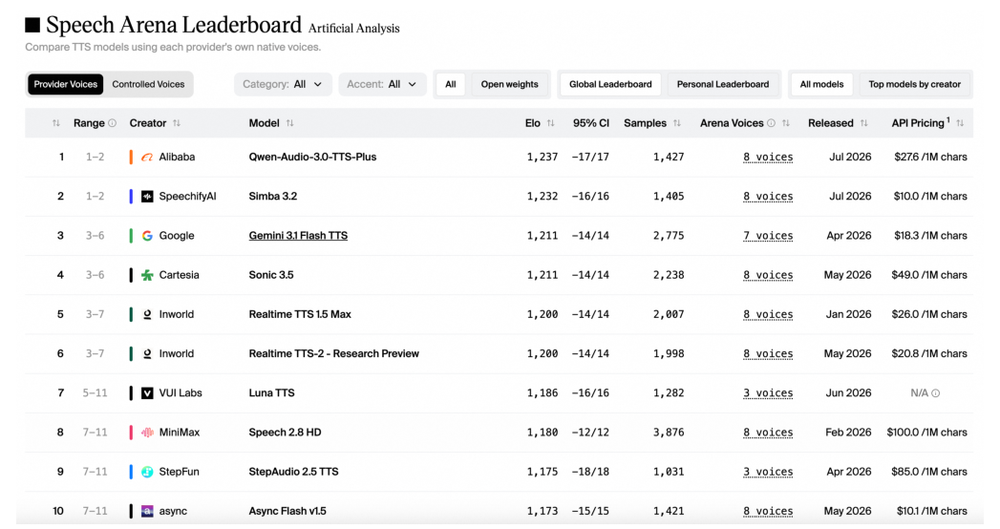
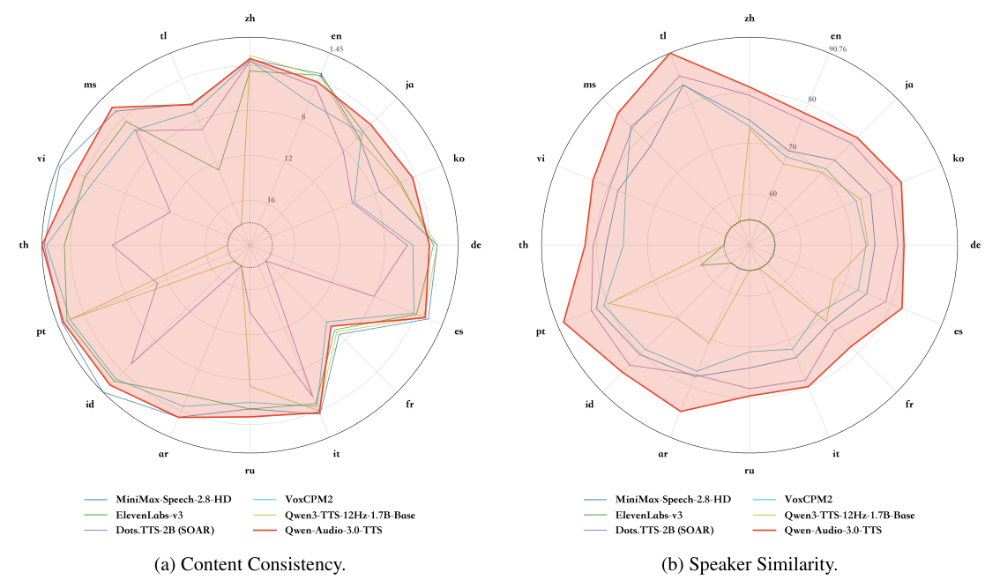
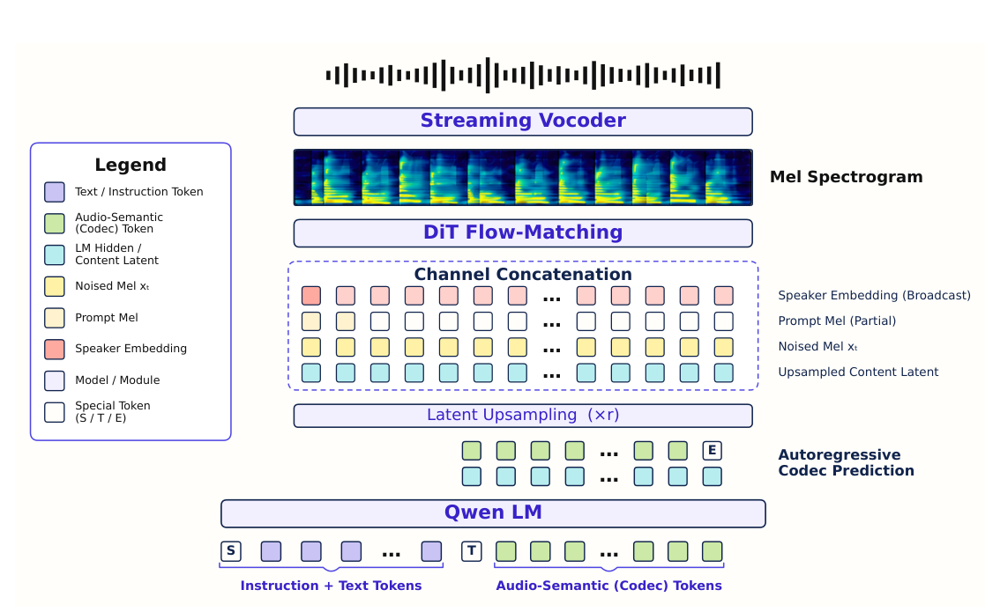
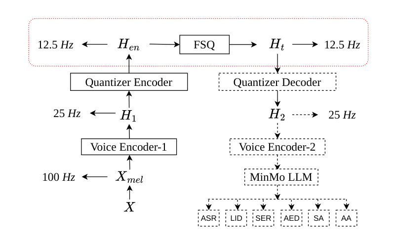
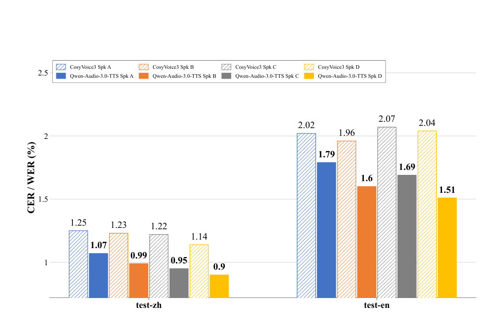

(Equal contribution; alphabetical by given name.) Bajian Xiang, Cheng Wen, Han Zhao, Hao Wang, Haoxu Wang, Jiawei Jin, Jiayan Cui, Jie Chen, Mengxi Nie, Tianyu Zhao, Weiqin Li, Xiang Lv, Xiangang Li, Yang Xiang, Yang Zhou
阿里巴巴 Token FoundryAlibaba Token Foundry
Ð Demo Page
Ð Demo 展示页面（原文首字符为 PDF 抽取残留的乱码符号）。
摘要Abstract
In this report, we present Qwen-Audio-3.0-TTS, a production-oriented speech synthesis system that jointly advances content consistency, speaker similarity, prosodic naturalness, audio quality, controllability, multilingual coverage, efficiency, and robustness. It combines a 12.5 Hz low-frame-rate speech tokenizer for reduced inference latency with a five-stage progressive training paradigm for coordinated language model (LM) and flow-matching model (FM) optimization. The model provides production-level control through free-style natural-language instructions and fine-grained inline tags, while supporting 16 languages, 20 Chinese dialect regions, one-pass long-form synthesis up to 3 minutes, and robust generation from noisy, reverberant, or unclear reference speech. Across SEED- TTS-Eval, CV3-Eval, instruction-following, long-form, and acoustic-robustness evaluations, Qwen-Audio-3.0-TTS achieves state-of-the-art performance on many reported dimensions or the strongest aggregate results. It also ranks first on the independent Artificial Analysis Text-to-Speech Leaderboard. These results establish Qwen-Audio-3.0-TTS as a strong foundation for production-level speech synthesis.
在本报告中，我们提出 Qwen-Audio-3.0-TTS，一个面向生产环境的语音合成系统，它在内容一致性、说话人相似度、韵律自然度、音频质量、可控性、多语言覆盖、效率与鲁棒性上协同推进。它将 12.5 Hz 低帧率语音分词器（用于降低推理延迟）与五阶段渐进训练范式（用于协调语言模型 LM 与流匹配模型 FM 的优化）结合在一起。该模型通过自由形式的自然语言指令和细粒度行内标签提供生产级控制能力，同时支持 16 种语言、20 个汉语方言区、最长 3 分钟的单次长音频合成，以及从含噪、带混响或不清晰的参考语音中稳健生成。在 SEED-TTS-Eval、CV3-Eval、指令跟随、长音频与声学鲁棒性等多项评测中，Qwen-Audio-3.0-TTS 在所报告的大多数维度上达到 SOTA，或取得最强的综合结果。它还在独立的 Artificial Analysis 文本转语音榜单上排名第一。这些结果表明，Qwen-Audio-3.0-TTS 是生产级语音合成的坚实基础。
1 1 引言Introduction
Recent advances in large language models (LLMs), neural speech codecs, and diffusion/flow-based generative modeling have fundamentally reshaped text-to-speech (TTS) synthesis. Modern zeroshot systems learn from large-scale multi-speaker corpora and can reproduce the timbre and speaking characteristics of an unseen reference speaker without target-speaker fine-tuning [1–4]. The field has consequently moved beyond basic intelligibility toward robust multilingual and crosslingual synthesis, fine-grained control of acoustic attributes, stable long-form generation, lowlatency streaming, and resilience to adverse prompt conditions.
大语言模型（LLM）、神经语音 codec 以及扩散/流式生成建模的最新进展，从根本上重塑了文本转语音（TTS）合成。现代零样本（zero-shot）系统从大规模多说话人语料中学习，无需针对目标说话人微调，就能复现未见过的参考说话人的音色与说话特征 [1–4]。因此，该领域已经超越基本的可懂度，转向鲁棒的多语言与跨语言合成、声学属性的细粒度控制、稳定的长音频生成、低延迟流式合成，以及对恶劣提示条件的抵抗力。
The modern in-context TTS landscape can be summarized by four overlapping paradigms. Autoregressive discrete-token systems, established by VALL-E and subsequently developed by Spark-TTS and Qwen3-TTS, integrate naturally with language modeling and enable low-latency causal generation, but quantization can discard fine acoustic information and decoding cost grows with token rate [1, 5, 6]. Non-autoregressive continuous systems such as Voicebox, E2 TTS, and F5-TTS instead synthesize continuous acoustic representations through parallel diffusion or flow matching, providing high fidelity at the cost of iterative utterance-level sampling that can complicate streaming [3,7,8].
现代上下文内（in-context）TTS 的格局可以归纳为四种相互重叠的范式。自回归离散 token 系统由 VALL-E 开创，随后被 Spark-TTS 和 Qwen3-TTS 发展，它们与语言建模天然契合、支持低延迟的因果生成，但量化可能丢失细粒度声学信息，且解码成本随 token 帧率增长 [1, 5, 6]。以 Voicebox、E2 TTS 和 F5-TTS 为代表的非自回归（NAR）连续系统，则通过并行扩散或流匹配合成连续声学表征，以高保真度为代价，需要逐句迭代采样，这可能给流式合成带来麻烦 [3,7,8]。
Preprint.
预印本。

图Figure 1: Artificial Analysis Text-to-Speech Leaderboard snapshot on July 16, 2026.
图 1：2026 年 7 月 16 日的 Artificial Analysis 文本转语音榜单快照。
Hybrid systems then combined autoregressive semantic planning with continuous acoustic generation. Seed-TTS is an early representative, while CosyVoice introduced a supervised semantic speech tokenizer; CosyVoice2 improved codebook utilization and unified streaming and non-streaming synthesis, and CosyVoice3 strengthened in-the-wild generation through multi-task supervision, scaling, and post-training [2,4,9,10]. This design separates linguistic planning from detailed rendering, but a discrete single-codebook interface remains an information and optimization bottleneck. More recently, continuous-autoregressive systems such as DiTAR, Dots.TTS, and VoxCPM2 have modeled continuous latents patch by patch without an external speech tokenizer [11–13]. They avoid quantization loss, but high-dimensional next-step generation, iterative local sampling, and error propagation can make synthesis stability and long-form consistency more sensitive to model and sampling design. These paradigms therefore offer complementary trade-offs rather than a single universally dominant solution.
混合系统随后将自回归的语义规划与连续声学生成结合起来。Seed-TTS 是早期代表，CosyVoice 引入了有监督的语义语音分词器；CosyVoice2 改进了码本利用率并统一了流式与非流式合成，CosyVoice3 则通过多任务监督、规模化与后训练强化了野外（in-the-wild）生成能力 [2,4,9,10]。这种设计将语言规划与细节渲染分离，但离散的单码本接口仍然是信息与优化的瓶颈。更近的连续自回归系统，如 DiTAR、Dots.TTS 和 VoxCPM2，不依赖外部语音分词器，逐块（patch）对连续潜变量建模 [11–13]。它们避免了量化损失，但高维的下一步生成、迭代式局部采样与误差传播，会使合成稳定性与长音频一致性对模型和采样设计更加敏感。因此，这些范式提供的是互补的权衡，而不是一个普遍占优的单一方案。
The remaining challenge is to deliver these strengths simultaneously in a production-grade system. A practical TTS model must preserve content and speaker identity, generate clean, expressive, and natural audio, follow flexible control requests, cover diverse languages and dialects, stream with low latency, and remain stable with noisy, reverberant, or bandwidth-limited prompts. Standard shortform clean-speech benchmarks capture only part of these requirements and can obscure failures in multilingual, dialectal, long-form, and adverse acoustic conditions.
剩下的挑战是：如何在一个生产级系统中同时交付这些优势。一个实用的 TTS 模型必须保留内容与说话人身份，生成干净、富有表现力且自然的音频，遵循灵活的控制请求，覆盖多样的语言与方言，以低延迟流式输出，并在含噪、带混响或带宽受限的提示下保持稳定。标准的短音频干净语音基准只覆盖其中一部分需求，还可能掩盖多语言、方言、长音频与恶劣声学条件下的失败。
Qwen-Audio-3.0-TTS targets this complete quality–control–efficiency frontier in a single system. Building on CosyVoice2 and CosyVoice3, it retains efficient semantic planning while conditioning the flow-matching acoustic renderer on continuous LM hidden states and jointly optimizing the LM and FM, thereby alleviating the information bottleneck of a token-only interface. A 12.5 Hz tokenizer reduces autoregressive decoding cost, while high-quality data annealing, robustness training, and LM/FM reinforcement learning address content accuracy, prosodic naturalness, voice fidelity, perceptual quality, and adverse-prompt robustness. The resulting model combines production-level control and broad linguistic coverage with efficient, stable generation. Its key contributions are:
Qwen-Audio-3.0-TTS 的目标是在单一系统中同时触及这条完整的质量—控制—效率前沿。在 CosyVoice2 和 CosyVoice3 的基础上，它保留了高效的语义规划，同时让流匹配声学渲染器以 LM 的连续隐状态为条件，并联合优化 LM 与 FM，从而缓解纯 token 接口的信息瓶颈。12.5 Hz 分词器降低了自回归解码成本，而高质量数据退火、鲁棒性训练与 LM/FM 强化学习则分别解决内容准确性、韵律自然度、声音保真度、感知质量与恶劣提示鲁棒性。最终得到的模型把生产级可控性与广泛的语言覆盖结合在高效、稳定的生成之中。其主要贡献如下：
• Low-frame-rate speech tokenizer: A 12.5 Hz supervised speech tokenizer reduces autoregressive decoding cost while retaining content and speaker information.
• 低帧率语音分词器：12.5 Hz 有监督语音分词器在保留内容与说话人信息的同时，降低了自回归解码成本。
• Progressive training paradigm: The training pipeline combines independent LM and FM pretraining, joint training with high-quality data annealing, LM reinforcement learning, FM robustness training, and FM reinforcement learning to improve content consistency, prosodic naturalness, voice fidelity, perceptual quality, and robustness.
• 渐进训练范式：训练流水线结合了独立的 LM 与 FM 预训练、带高质量数据退火的联合训练、LM 强化学习、FM 鲁棒性训练与 FM 强化学习，以提升内容一致性、韵律自然度、声音保真度、感知质量与鲁棒性。
• Production-grade controllability: The model interprets free-style natural-language instructions describing role, emotion, speaking style, rate, timbre, and accent. In parallel, 86 newly added fine-grained inline tags enable localized control at phrase and word level, inzh en tl
• 生产级可控性：模型能理解描述角色、情感、说话风格、语速、音色与口音的自由形式自然语言指令。同时新增 86 个细粒度内联标签，支持短语级与词级的局部控制。（图 1：(a) 内容一致性（Content Consistency）与 (b) 说话人相似度（Speaker Similarity）——zh/en/tl/ja/ms/ko/vi/de/th/es/pt/fr/id/it/ar/ru 各语种对比 MiniMax-Speech-2.8-HD、ElevenLabs-v3、Dots.TTS-2B (SOAR)、VoxCPM2、Qwen3-TTS-12Hz-1.7B-Base 与 Qwen-Audio-3.0-TTS（本模型，两图均含，3.0/3.0）；刻度 1.45/4/8/12/16 与 90.76/80/70/60。）
1.45 4ja ms8ko vi12 16de th es pt fr id it ar ru MiniMax-Speech-2.8-HD ElevenLabs-v3 Dots.TTS-2B (SOAR) VoxCPM2 Qwen3-TTS-12Hz-1.7B-Base Qwen-Audio-3.0-TTS (a) Content Consistency. zh en tl
同时新增 86 个细粒度内联标签，支持短语级与词级的局部控制。（图 1：(a) 内容一致性（Content Consistency）与 (b) 说话人相似度（Speaker Similarity）——zh/en/tl/ja/ms/ko/vi/de/th/es/pt/fr/id/it/ar/ru 各语种对比 MiniMax-Speech-2.8-HD、ElevenLabs-v3、Dots.TTS-2B (SOAR)、VoxCPM2、Qwen3-TTS-12Hz-1.7B-Base 与 Qwen-Audio-3.0-TTS（本模型，两图均含，3.0/3.0）；刻度 1.45/4/8/12/16 与 90.76/80/70/60。）
90.76ja ms80 70ko vi60de th es pt fr id it ar ru MiniMax-Speech-2.8-HD ElevenLabs-v3 Dots.TTS-2B (SOAR) VoxCPM2 Qwen3-TTS-12Hz-1.7B-Base Qwen-Audio-3.0-TTS (b) Speaker Similarity.
同时新增 86 个细粒度内联标签，支持短语级与词级的局部控制。（图 1：(a) 内容一致性（Content Consistency）与 (b) 说话人相似度（Speaker Similarity）——zh/en/tl/ja/ms/ko/vi/de/th/es/pt/fr/id/it/ar/ru 各语种对比 MiniMax-Speech-2.8-HD、ElevenLabs-v3、Dots.TTS-2B (SOAR)、VoxCPM2、Qwen3-TTS-12Hz-1.7B-Base 与 Qwen-Audio-3.0-TTS（本模型，两图均含，3.0/3.0）；刻度 1.45/4/8/12/16 与 90.76/80/70/60。）

图Figure 2: Multilingual comparison on the 16-language CV3-Eval benchmark. In both panels, farther from the center indicates better performance.
图 2：16 语言 CV3-Eval 基准上的多语言对比。两个子图中，离中心越远表示性能越好。
cluding expressive transitions and non-verbal events such as laughter, breathing, coughing, and sighing.
（接上句）包括表现力过渡以及笑声、呼吸、咳嗽、叹气等非语言事件。
• Broad and robust deployment coverage: The model supports 16 languages, seven of them newly added, and 20 Chinese dialect regions; it handles hard text-normalization cases, one-pass synthesis up to 3 minutes, and degraded prompts without an explicit denoising mode. A two-stage speaker-adaptation protocol and vocoder super-resolution further support target-voice adaptation and 48 kHz output.
• 广泛而鲁棒的部署覆盖：模型支持 16 种语言（其中 7 种为新增）与 20 个汉语方言区；能处理困难的文本规整（text normalization）案例、最长 3 分钟的单次合成，以及无需显式去噪模式的退化提示。两阶段的说话人适配协议与声码器超分辨率进一步支持目标音色适配和 48 kHz 输出。
• Comprehensive evaluation: We evaluate zero-shot voice cloning, multilingual and crosslingual synthesis, free-style instruction following, fine-grained control, text normalization, long-form generation, adverse-prompt robustness, and 20-dialect synthesis through objective benchmarks and arena-style human evaluation.
• 全面评测：我们通过客观基准与竞技场式人工评测，评估零样本声音克隆、多语言与跨语言合成、自由形式指令跟随、细粒度控制、文本规整、长音频生成、恶劣提示鲁棒性与 20 种方言合成。
Figure 1 provides the snapshot of Artificial Analysis Text-to-Speech Arena leaderboard1 on July 16, 2026, which evaluates provider-native voices through blind pairwise preference tests with comparable gender and accent. The provider label Qwen-Audio-3.0-TTS-Plus corresponds to the model reported as Qwen-Audio-3.0-TTS in this paper. Qwen-Audio-3.0-TTS-Plus ranks first with an Elo score of 1,237 from 1,427 samples. It has a displayed rank range of 1–2, and its 95% confidence interval overlaps that of Simba 3.2; the leaderboard therefore places Qwen-Audio-3.0-TTS-Plus first by point estimate and within the statistically leading group.
图 1 提供了 2026 年 7 月 16 日 Artificial Analysis 文本转语音竞技场榜单（见脚注 1）的快照，该榜单通过性别与口音可比的盲测成对偏好测试评估各提供商的原生音色。提供商标签 Qwen-Audio-3.0-TTS-Plus 对应本文所称的 Qwen-Audio-3.0-TTS 模型。Qwen-Audio-3.0-TTS-Plus 以 1,237 的 Elo 分数排名第一（样本量 1,427），显示名次区间为 1–2，其 95% 置信区间与 Simba 3.2 存在重叠；因此榜单按点估计将其列为第一，且它处于统计上的领先集团之内。
In addition, extensive experiments demonstrate that Qwen-Audio-3.0-TTS has a favorable balance between content consistency, speaker similarity, prosodic naturalness, audio quality, and controllability. It achieves the best or highly competitive aggregate results on SEED-TTS-Eval, CV3-Eval, instruction-following, long-form synthesis, and adverse-prompt evaluation. It obtains the best aggregate free-style instruction-following scores in both Chinese and English, while standard-mode inference remains competitive with systems using explicit denoising. Figure 2 visualizes the perlanguage CV3-Eval comparison among several competitive providers, with content consistency in Figure 2a and speaker similarity in Figure 2b.
此外，大量实验表明 Qwen-Audio-3.0-TTS 在内容一致性、说话人相似度、韵律自然度、音频质量与可控性之间取得了良好的平衡。它在 SEED-TTS-Eval、CV3-Eval、指令跟随、长音频合成与恶劣提示评测上取得了最佳或极具竞争力的综合结果。它在中文和英文上都取得了最佳的自由形式指令跟随综合得分，同时其标准模式推理仍能与使用显式去噪的系统竞争。Figure 2 可视化了若干有竞争力的提供商在 CV3-Eval 上的逐语言对比，其中 Figure 2a 为内容一致性，Figure 2b 为说话人相似度。
1https://artificialanalysis.ai/text-to-speech/leaderboard/provider-voice?tab=leaderboard
1https://artificialanalysis.ai/text-to-speech/leaderboard/provider-voice?tab=leaderboard
2 Qwen-Audio-3.0-TTSQwen-Audio-3.0-TTS

图Figure 3: Overall architecture of Qwen-Audio-3.0-TTS, comprising the language model, flowmatching model, and vocoder.
图 3：Qwen-Audio-3.0-TTS 的整体架构，由语言模型、流匹配模型与声码器组成。
As shown in Figure 3, Qwen-Audio-3.0-TTS is built on a three-component synthesis architecture comprising a language model (LM) for semantic token prediction, a flow-matching model (FM) for acoustic feature reconstruction, and a causal BigVGAN vocoder [14] for waveform synthesis. A 12.5 Hz low-frame-rate speech tokenizer reduces autoregressive decoding cost, while the progressive LM–FM training paradigm improves linguistic accuracy, acoustic fidelity, controllability, and robustness.
如 Figure 3 所示，Qwen-Audio-3.0-TTS 建立在一个三组件合成架构之上：负责语义 token 预测的语言模型（LM）、负责声学特征重建的流匹配模型（FM），以及负责波形合成的因果 BigVGAN 声码器 [14]。12.5 Hz 低帧率语音分词器降低了自回归解码成本，而渐进式 LM–FM 训练范式则提升了语言准确性、声学保真度、可控性与鲁棒性。
2.1 2.1 低帧率语音分词器Low-Frame-Rate Speech Tokenizer
As shown in Figure 4, the tokenizer follows the supervised design of CosyVoice3 [4]: a causal SenseVoice encoder [15] and Finite Scalar Quantization (FSQ) [16] are integrated into a multi-task voice-encoder pipeline inspired by MinMo [17]. It maps Mel features to 12.5 Hz discrete tokens and learns the representation through supervised ASR, language, emotion, audio-event, speaker, and general audio-analysis tasks.
如 Figure 4 所示，分词器沿用 CosyVoice3 [4] 的有监督设计：因果 SenseVoice 编码器 [15] 与有限标量量化（FSQ）[16] 被整合进一条受 MinMo [17] 启发的多任务语音编码器流水线。它将 Mel 特征映射为 12.5 Hz 离散 token，并通过有监督的 ASR、语言、情感、音频事件、说话人与通用音频分析任务来学习表征。
The encoder progressively downsamples the Mel sequence before quantization, and a corresponding decoder reconstructs an intermediate representation for multi-task supervision. This supervised bottleneck encourages the discrete tokens to retain linguistic content together with speaker, emotion, and acoustic-event information useful for speech generation. Training follows a continuousto-quantized curriculum: the model first learns a stable continuous representation and subsequently activates FSQ to obtain discrete tokens.
编码器在量化之前对 Mel 序列逐步下采样，对应的解码器则重建一个中间表征用于多任务监督。这种有监督瓶颈促使离散 token 同时保留语言内容，以及对语音生成有用的说话人、情感与声学事件信息。训练遵循「先连续后量化」的课程：模型先学习稳定的连续表征，随后再激活 FSQ 以获得离散 token。
Relative to CosyVoice3, we reduce the token rate from 25 to 12.5 Hz, substantially shortening the autoregressive sequence. A higher-capacity quantization space and broader audio-analysis supervision compensate for the stronger temporal compression, balancing generation efficiency with representation capacity.
相对 CosyVoice3，我们将 token 帧率从 25 降至 12.5 Hz，大幅缩短了自回归序列长度。更高容量的量化空间与更广泛的音频分析监督弥补了更强的时间压缩，在生成效率与表征容量之间取得平衡。
2.2 2.2 多阶段渐进训练范式Multi-Stage Progressive Training Paradigm
Qwen-Audio-3.0-TTS uses five progressive stages: independent LM and FM pretraining, joint LM– FM training with high-quality data annealing, LM reinforcement learning, FM robustness training, 12.5 Hz 12.5 Hz Quantizer Encoder 25 Hz Voice Encoder-1 100 Hz FSQ Quantizer Decoder 25 Hz Voice Encoder-2 MinMo LLM ASR LID SER AED SA AA
Qwen-Audio-3.0-TTS 采用五个渐进阶段：独立的 LM 与 FM 预训练、带高质量数据退火的 LM–FM 联合训练、LM 强化学习、FM 鲁棒性训练（句末穿插的 12.5 Hz、25 Hz、100 Hz、Encoder-1、Encoder-2 及 FSQ、MinMo LLM、ASR、LID、SER、AED、SA、AA 等字样为 Figure 4 分词器结构图的抽取残留），

图Figure 4: Architecture of the proposed supervised speech tokenizer. The tokenizer is optimized using a multi-task supervised learning objective encompassing automatic speech recognition (ASR), language identification (LID), speech emotion recognition (SER), audio event detection (AED), speaker analysis (SA), and broader audio analysis (AA) tasks.
图 4：所提出的有监督语音分词器架构。分词器以多任务监督学习目标进行优化，涵盖自动语音识别（ASR）、语种识别（LID）、语音情感识别（SER）、音频事件检测（AED）、说话人分析（SA）与更广义的音频分析（AA）任务。
and FM reinforcement learning. Each stage starts from the preceding checkpoint and targets the capabilities most directly controlled by the corresponding module.
以及 FM 强化学习。每个阶段都从前一阶段的检查点出发，针对由相应模块最直接控制的能力进行优化。
2.2.1 2.2.1 LM 与 FM 的独立预训练Independent Pretraining of LM and FM
The first stage follows the same decoupled LM–FM training recipe as our previous work, CosyVoice2 [10] and CosyVoice3 [4]. The bi-streaming language model and the chunk-based flowmatching model are pretrained independently on large-scale, diverse speech data. The LM learns to predict the discrete semantic tokens produced by the speech tokenizer from the text and prompt context, thereby establishing robust content modeling and semantic planning capabilities. In parallel, the FM learns to reconstruct continuous acoustic features from tokenizer-derived discrete tokens, establishing a reliable mapping from quantized semantic representations to mel-spectrograms.
第一阶段沿用我们此前工作 CosyVoice2 [10] 与 CosyVoice3 [4] 中相同的 LM–FM 解耦训练方案。双流式语言模型与基于片段（chunk）的流匹配模型在大规模、多样化的语音数据上独立预训练。LM 学习根据文本与提示上下文预测语音分词器产生的离散语义 token，从而建立稳健的内容建模与语义规划能力。与此同时，FM 学习从分词器导出的离散 token 重建连续声学特征，建立从量化语义表征到 Mel 频谱图的可靠映射。
This independent pretraining provides a stable initialization for both components before they are coupled. It also preserves the modularity of the Cascade system: the LM can be scaled to improve linguistic and semantic modeling, while the FM can focus on acoustic fidelity and speaker reconstruction. The training data covers general speech, multilingual and dialect speech, and instructionfollowing data, providing broad coverage of languages, speakers, and speaking styles. The resulting LM and FM checkpoints together form the first-stage Cascade model and are used to initialize the joint-training stage described below.
这种独立预训练在两个组件耦合之前为它们提供了稳定的初始化。它还保留了级联（Cascade）系统的模块化：LM 可以规模化以提升语言与语义建模，FM 则专注于声学保真度与说话人重建。训练数据覆盖通用语音、多语言与方言语音以及指令跟随数据，提供了语言、说话人与说话风格的广泛覆盖。得到的 LM 与 FM 检查点共同构成第一阶段的级联模型，并用于初始化下文所述的联合训练阶段。
2.2.2 2.2.2 带高质量数据退火的 LM–FM 联合训练Joint LM-FM Training with High-Quality Data Annealing
The second stage starts from the first-stage Cascade checkpoint and couples the pretrained LM and FM for end-to-end optimization. In alignment with the methodology of JoyVoice [18], we condition the FM on continuous hidden states produced by the LM instead of discrete token embeddings. The semantic-token prediction path is retained, while the LM token-prediction objective and the FM flow-matching objective are optimized jointly. Consequently, the FM reconstruction loss can also shape the upstream LM representations through the shared hidden-state path.
第二阶段从第一阶段的级联检查点出发，将预训练的 LM 与 FM 耦合进行端到端优化。与 JoyVoice [18] 的方法一致，我们让 FM 以 LM 产生的连续隐状态为条件，而不是离散 token 嵌入。语义 token 预测路径被保留，LM 的 token 预测目标与 FM 的流匹配目标被联合优化。因此，FM 的重建损失也能通过共享的隐状态路径反向塑造上游 LM 的表征。
This design reduces the information bottleneck introduced by discrete token quantization and mitigates the optimization mismatch between independently trained components. Compared with token IDs alone, the continuous LM hidden states preserve richer context that is useful for content realization, prosody, speaker characteristics, and instruction following. The FM can therefore exploit information that may not be fully represented by the discrete code sequence, while the token-prediction objective continues to provide a stable semantic learning signal. Instead of treating joint optimization as an isolated training setup in JoyVoice, our training schedule is progressive: it explicitly initializes joint training from the independently pretrained Cascade model.
这一设计减少了离散 token 量化带来的信息瓶颈，并缓解了独立训练组件之间的优化错配。与单独的 token ID 相比，连续的 LM 隐状态保留了更丰富的上下文，对内容呈现、韵律、说话人特征与指令跟随都很有用。因此 FM 能利用离散码序列可能无法完整表示的信息，而 token 预测目标继续提供稳定的语义学习信号。与 JoyVoice 将联合优化作为一个独立训练设置不同，我们的训练日程是渐进式的：它显式地从独立预训练的级联模型初始化联合训练。
Joint training first uses the broad-coverage data mixture to establish LM–FM alignment across languages, speakers, and styles. After this alignment has stabilized, training is annealed to a carefully curated high-quality subset containing cleaner and more expressive speech. Introducing this narrower distribution only in the later phase allows the model to retain the coverage learned from large-scale data while placing greater emphasis on acoustic fidelity, naturalness, expressiveness, and reliable instruction realization. Together, hidden-state conditioning and high-quality data annealing improve content consistency, prosodic detail, and end-to-end controllability.
联合训练首先使用广覆盖的数据混合，在语言、说话人与风格之间建立 LM–FM 对齐。在对齐稳定之后，训练退火到一个精心筛选的高质量子集，其中包含更干净、更具表现力的语音。只在后期引入这一更窄的分布，使模型既能保留从大规模数据中学到的覆盖面，又能把更多权重放在声学保真度、自然度、表现力与可靠的指令实现上。隐状态条件化与高质量数据退火共同提升了内容一致性、韵律细节与端到端可控性。
2.2.3 2.2.3 语言模型强化学习Language Model Reinforcement Learning
Starting from the jointly trained checkpoint, we optimize the autoregressive text-to-token LM while freezing the downstream FM and vocoder. Online Group Relative Policy Optimization (GRPO) [19], regularized by a KL penalty to a frozen reference policy, compares groups of token rollouts under a composite reward that balances content consistency, duration robustness, generation diversity, and prosodic naturalness:
从联合训练的检查点出发，我们优化自回归的文本到 token LM，同时冻结下游的 FM 与声码器。在线组相对策略优化（GRPO）[19] 以针对冻结参考策略的 KL 惩罚为正则，在一个平衡内容一致性、时长鲁棒性、生成多样性与韵律自然度的复合奖励下，比较成组的 token 采样结果：
Rbase,i = λcontentRcontent,i + λdurRdur,i + λdivRdiv,i + λprosodyRprosody,i. (1)The content term is obtained from token-domain ASR; the duration term suppresses length outliers; the diversity term discourages mechanical collapse; and the prosody term rewards plausible alignment progression and pause timing. All rewards are computed before FM and vocoder inference, enabling efficient token-only rollouts.
内容项来自 token 域的 ASR；时长项抑制时长异常值；多样性项抑制机械性塌缩；韵律项奖励合理的对齐推进与停顿时机。所有奖励都在 FM 与声码器推理之前计算，从而实现高效的纯 token 采样。
We additionally use a differentiable DiffRO branch [4] based on Gumbel–Softmax [20]. To stabilize optimization, extreme anomalous rollouts, such as repetitions or missing stop tokens, are excluded from GRPO updates; DiffRO is further restricted to candidates with non-negative group-relative advantages: LRL = LGRPO + λdiffL+ DiffRO.
我们还额外使用了一个基于 Gumbel–Softmax [20] 的可微 DiffRO 分支 [4]。为稳定优化，诸如重复或缺失结束 token 等极端异常样本被排除在 GRPO 更新之外；DiffRO 进一步被限制在组相对优势非负的候选上：LRL = LGRPO + λdiffL+ DiffRO。
(2)GRPO supplies sequence-level relative preference, whereas DiffRO supplies selected token-level corrective gradients. LM reinforcement learning follows a two-phase curriculum: general generation optimization first excludes instruction-following, fine-grained-control, and dialect samples to avoid optimizing attributes not captured by the base reward; subsequent multi-task alignment adds dialect-classification correctness as an attribute reward, improving dialect authenticity while preserving the general synthesis robustness acquired during the first phase. With suitable attribute supervision, the same framework can be extended to instruction following and fine-grained control. The resulting curriculum goes beyond WER-only optimization and balances accuracy, naturalness, and controllability.
（式 2）GRPO 提供序列级相对偏好，而 DiffRO 提供选定 token 级的矫正梯度。LM 强化学习遵循两阶段课程：通用生成优化先排除指令跟随、细粒度控制与方言样本，以避免优化基础奖励未能刻画的属性；随后的多任务对齐加入方言分类正确性作为属性奖励，在保留第一阶段获得的通用合成鲁棒性的同时提升方言真实度。配合合适的属性监督，同一框架可以扩展到指令跟随与细粒度控制。最终的课程超越了只优化 WER 的做法，平衡了准确性、自然度与可控性。
2.2.4 2.2.4 冻结 LM 的声学鲁棒性训练Acoustic Robustness Training with Frozen LM
Real-world prompts may be noisy, reverberant, bandwidth-limited, or recorded by low-quality devices. During the fourth stage, the LM is frozen and the FM is trained to recover clean, high-quality speech from degraded prompts while preserving timbre. The augmentation pool includes additive noise and reverberation; phone, Bluetooth, and laptop-microphone responses; far-field recording; physical blockage such as masks or hands over the microphone; codec, DAC, and amplifier artifacts; packet loss; strong echo; and compound settings such as noisy far-field meeting rooms or noise mixed with electronic distortion. Sampling these conditions during training integrates prompt enhancement into the cloning path rather than relying on a separate inference-time denoiser.
真实世界的提示语音可能是含噪的、带混响的、带宽受限的，或由低质量设备录制的。在第四阶段，LM 被冻结，FM 被训练为从退化的提示中恢复干净、高质量的语音，同时保留音色。增广池包括加性噪声与混响；电话、蓝牙与笔记本麦克风响应；远场录音；口罩或手遮挡麦克风等物理阻挡；codec、DAC 与放大器伪影；丢包；强回声；以及噪声远场会议室、噪声混合电子失真等复合场景。在训练中采样这些条件，把提示增强整合进克隆路径内部，而不是依赖一个独立的推理时去噪器。
2.2.5 2.2.5 流匹配强化学习Flow-Matching Reinforcement Learning
The fifth stage applies FlowTTS-GRPO [21–23] to the FM, targeting speaker similarity and perceptual quality while the LM remains fixed. We convert deterministic ODE sampling xt+∆t = xt + vθ(xt, t)∆t into a marginal-preserving SDE sampler for on-policy exploration:
第五阶段对 FM 应用 FlowTTS-GRPO [21–23]，在 LM 保持固定的情况下优化说话人相似度与感知质量。我们将确定性 ODE 采样 xt+∆t = xt + vθ(xt, t)∆t 转换为一个保持边缘分布的 SDE 采样器，以进行在策略（on-policy）探索：
r∆t ϵ, σt = axt+∆t = xt,mean + σt √1 −tt , ϵ ∼N(0, I), (3)xt,mean = xt + vθ(xt, t) +
（公式：x_{t,mean} = x_t + [v_θ(x_t, t) + σ²_t/(2(1 −t))·(−x_t + t·v_θ(x_t, t))]·∆t（式 4），其中 v_θ 为以 LM 隐藏态、提示 mel 特征与说话人嵌入为条件的速度场，a 控制探索强度。）
σ2t 2(1 −t) (−xt + t vθ(xt, t)) ∆t,
（公式：x_{t,mean} = x_t + [v_θ(x_t, t) + σ²_t/(2(1 −t))·(−x_t + t·v_θ(x_t, t))]·∆t（式 4），其中 v_θ 为以 LM 隐藏态、提示 mel 特征与说话人嵌入为条件的速度场，a 控制探索强度。）
(4)where vθ is the velocity field conditioned on LM hidden states, prompt mel features, and the speaker embedding, and a controls exploration intensity. For each prompt, G waveforms are sampled and the reward is normalized within the group:
（公式：x_{t,mean} = x_t + [v_θ(x_t, t) + σ²_t/(2(1 −t))·(−x_t + t·v_θ(x_t, t))]·∆t（式 4），其中 v_θ 为以 LM 隐藏态、提示 mel 特征与说话人嵌入为条件的速度场，a 控制探索强度。）对每个提示，采样 G 条波形，奖励在组内归一化：
ˆAi = R(ˆxi 1, c) −mean{R(ˆxj 1, c)}G j=1 std{R(ˆxj 1, c)}G j=1
ˆAi = R(ˆxi 1, c) −mean{R(ˆxj 1, c)}G j=1 std{R(ˆxj 1, c)}G j=1。其中 ˆxi 1 是第 i 条终止波形，c 包含其条件输入。
.(5)where ˆxi 1 is the i-th terminal waveform and c contains its conditioning inputs. The reward combines speaker-verification similarity (SS), ASR intelligibility, and DNSMOS quality, each standardized by its per-batch standard deviation:
（公式片段，式 5：……其中 x̂^i_1 为第 i 个终端波形，c 包含其条件输入。）奖励结合了说话人验证相似度（SS）、ASR 可懂度与 DNSMOS 质量，每一项都按其批内标准差标准化：
R = λ1 RSS std(RSS) + λ2 RASR std(RASR) + λ3 RMOS std(RMOS),
（公式：R = λ1·R_SS/std(R_SS) + λ2·R_ASR/std(R_ASR) + λ3·R_MOS/std(R_MOS)（式 6），使 λ1、λ2、λ3 表达预期的目标配比而非原始奖励方差。）
(6)so that λ1, λ2, and λ3 express the intended objective balance rather than raw reward variance. SDE exploration and policy optimization are restricted to an early-step window while later steps revert to the ODE, and classifier-free guidance [24] is omitted during training rollouts to widen exploration.
（公式：R = λ1·R_SS/std(R_SS) + λ2·R_ASR/std(R_ASR) + λ3·R_MOS/std(R_MOS)（式 6），使 λ1、λ2、λ3 表达预期的目标配比而非原始奖励方差。）SDE 探索与策略优化被限制在早期步窗口内，后续步回到 ODE；训练采样期间省略无分类器引导（classifier-free guidance）[24] 以扩大探索范围。
2.3 2.3 说话人适配Speaker Adaptation
Speaker adaptation follows a two-stage supervised fine-tuning (SFT) procedure. Stage 1 jointly fine-tunes the LM and FM through chained adaptation rounds. In each round, the complete targetspeaker set is paired with a refreshed replay subset matched by effective audio duration, maintaining broad linguistic and expressive coverage during adaptation. Stage 2 freezes the LM and refines the FM using target-speaker speech only, focusing the final update on speaker characteristics and local prosody.
说话人适配遵循两阶段的监督微调（SFT）流程。第 1 阶段（Stage 1）通过链式适配轮次联合微调 LM 与 FM。在每一轮中，完整的目标说话人集合与一个按有效音频时长匹配、不断刷新的回放（replay）子集配对，以在适配期间维持广泛的语言与表现力覆盖。第 2 阶段（Stage 2）冻结 LM，只用目标说话人语音精炼 FM，把最后的更新聚焦在说话人特征与局部韵律上。
A SFT-oriented super-resolution vocoder is trained to generate 48 kHz waveforms for richer harmonic detail and timbral expression.
一个面向 SFT 的超分辨率声码器被训练用于生成 48 kHz 波形，以获得更丰富的谐波细节与音色表现力。
A multi-scale short-time Fourier transform discriminator supplies adversarial supervision at several time–frequency resolutions and reduces stripe-like highfrequency artifacts. Noise injected during training exposes the vocoder to imperfect upstream acoustic features and reduces the mismatch between ground-truth features used in training and predicted features encountered at inference.
多尺度短时傅里叶变换判别器在多个时间–频率分辨率上提供对抗监督，并减少条状高频伪影。训练期间注入的噪声让声码器见到不完美的上游声学特征，减少训练所用真值特征与推理时遇到的预测特征之间的失配。
3 3 实验设置Experimental Settings
3.1 3.1 语音分词器Speech Tokenizer
The tokenizer follows the architecture in Section 2.1. It consumes 16 kHz audio through a Whisperstyle frontend with 128 Mel-frequency bins, producing features at 100 Hz. Its causal SenseVoice encoder contains 32 Transformer layers with 1280 hidden dimensions and 20 attention heads. The initial 12-layer Voice Encoder-1 uses rotary positional embeddings (RoPE) [25] and downsamples the sequence to a 25 Hz representation H1. A Quantizer Encoder then reduces both temporal and feature resolution to obtain Hen at 12.5 Hz.
分词器遵循 2.1 节的架构。它通过 Whisper 风格的前端处理 16 kHz 音频，使用 128 个 Mel 频带，产生 100 Hz 的特征。其因果 SenseVoice 编码器包含 32 层 Transformer，隐藏维度 1280，注意力头数 20。前 12 层的 Voice Encoder-1 使用旋转位置嵌入（RoPE）[25]，将序列下采样为 25 Hz 表征 H1。随后 Quantizer Encoder 同时降低时间与特征分辨率，得到 12.5 Hz 的 Hen。
A 10-dimensional FSQ bottleneck, inserted after encoder layer 11, uses three levels per dimension and produces tokens Ht from a codebook of 310 = 59,049 entries. On the decoder side, a Quantizer Decoder upsamples the tokens to a 25 Hz representation H2, which is processed by Voice Encoder2 before entering the MinMo LLM. The language-model backbone used for supervised tokenizer training is initialized from Qwen2.5-7B-Instruct [26].
一个 10 维 FSQ 瓶颈插在编码器第 11 层之后，每维 3 个级别，从大小为 310（即 3^10）= 59,049 的码本中产生 token Ht。在解码器一侧，Quantizer Decoder 将 token 上采样为 25 Hz 表征 H2，由 Voice Encoder-2 处理后送入 MinMo LLM。用于有监督分词器训练的语言模型骨干初始化自 Qwen2.5-7B-Instruct [26]。
During continuous training, FSQ is bypassed; the tokenizer components are updated directly, while the language model is adapted with LoRA [27]. During quantization training, FSQ is activated and the language-model weights are frozen. Both stages use cross-entropy objectives derived from the supervised tasks.
在连续训练阶段，FSQ 被绕过；分词器组件直接更新，语言模型则用 LoRA [27] 适配。在量化训练阶段，FSQ 被激活，语言模型权重被冻结。两个阶段都使用来自监督任务的交叉熵目标。
3.2 3.2 Qwen-Audio-3.0-TTS 的训练数据Training Data of Qwen-Audio-3.0-TTS
Qwen-Audio-3.0-TTS scales training data along five capability axes: multilingual and dialect coverage, free-style instruction following, fine-grained inline tags, long-form speech generation, and hardcase robustness. The model supports 16 languages, adding Malay, Tagalog, Arabic, Portuguese, Indonesian, Thai, and Vietnamese upon its predecessor CosyVoice3, and covers 20 Chinese dialect regions at finer geographic granularity.
Qwen-Audio-3.0-TTS 沿五个能力轴扩展训练数据：多语言与方言覆盖、自由形式指令跟随、细粒度行内标签、长音频语音生成与困难案例鲁棒性。模型支持 16 种语言，在前代 CosyVoice3 基础上新增马来语、塔加洛语、阿拉伯语、葡萄牙语、印尼语、泰语与越南语，并以更细的地理粒度覆盖 20 个汉语方言区。
Free-style instruction data covers speaker role, emotion, speaking style, rate, timbre, and accent. Fine-grained tags include localized controls for emotion, style, and speed as well as non-verbal events such as laughter, coughing, breathing, and sighing. Long-form speech is collected from narration-like settings and supports single-pass synthesis up to 3 minutes. Hard-case data covers polyphonic characters, rare and archaic characters, text-normalization numbers and symbols, and LaTeX mathematical expressions. During high-quality annealing, clean and expressive samples are emphasized.
自由形式指令数据覆盖说话人角色、情感、说话风格、语速、音色与口音。细粒度标签包括情感、风格与语速的局部控制，以及笑声、咳嗽、呼吸、叹气等非语言事件。长音频语音采集自类旁白场景，支持最长 3 分钟的单次合成。困难案例数据覆盖多音字、生僻字与古字、文本规整中的数字与符号，以及 LaTeX 数学表达式。在高质量退火期间，干净且富有表现力的样本被重点强调。
3.3 3.3 评测方法Evaluation Methods
For evaluating Qwen-Audio-3.0-TTS’s zero-shot speech generation capabilities, we focus on three key aspects: content consistency, speaker similarity, and audio quality. For content consistency, we measure the Character Error Rate (CER) or Word Error Rate (WER) of the ASR transcription against the given text, using Whisper-large V3 [28] for English ASR and Paraformer [29, 30] for Chinese ASR. To assess speaker similarity, we extract speaker embeddings from the generated speech using the ERes2Net speaker verification model [31] and calculate the cosine similarity with the embedding of the reference speech. For audio quality, we score the generated speech using the DNSMOS network [32], the scores of which show high correlations with human auditory perception.
为评测 Qwen-Audio-3.0-TTS 的零样本语音生成能力，我们关注三个关键方面：内容一致性、说话人相似度与音频质量。内容一致性方面，我们衡量 ASR 转录相对给定文本的字错误率（CER）或词错误率（WER），英语 ASR 使用 Whisper-large V3 [28]，中文 ASR 使用 Paraformer [29, 30]。说话人相似度方面，我们使用 ERes2Net 说话人验证模型 [31] 从生成语音中提取说话人嵌入，并计算其与参考语音嵌入的余弦相似度。音频质量方面，我们用 DNSMOS 网络 [32] 为生成语音打分，其分数与人类听觉感知高度相关。
Our core evaluations use SEED-TTS-Eval [2] and an extended CV3-Eval [4] covering seven additional languages. SEED-TTS-Eval reports both ERes2Net and WavLM similarity for comparison with prior work [33].
我们的核心评测使用 SEED-TTS-Eval [2] 和扩展版 CV3-Eval [4]（额外覆盖 7 种语言）。SEED-TTS-Eval 同时报告 ERes2Net 与 WavLM 相似度，以便与此前工作 [33] 比较。
We compare Qwen-Audio-3.0-TTS with widely used or competitive speech generation models. Non-autoregressive (NAR) baselines include F5-TTS [8], F5R-TTS [34], and LongCat-AudioDiT [35]. Autoregressive (AR) baselines include Seed-TTS [2], FireRedTTS-2 [36], IndexTTS2 [37], Qwen2.5-Omni [38], Qwen3.5-Omni [39], Qwen3-TTS [6], Minimax-Speech [40], CosyVoice3 [4], Dots.TTS [12], and VoxCPM2 [13].
我们将 Qwen-Audio-3.0-TTS 与广泛使用或有竞争力的语音生成模型进行比较。非自回归（NAR）基线包括 F5-TTS [8]、F5R-TTS [34] 与 LongCat-AudioDiT [35]。自回归（AR）基线包括 Seed-TTS [2]、FireRedTTS-2 [36]、IndexTTS2 [37]、Qwen2.5-Omni [38]、Qwen3.5-Omni [39]、Qwen3-TTS [6]、Minimax-Speech [40]、CosyVoice3 [4]、Dots.TTS [12] 与 VoxCPM2 [13]。
Beyond these test sets, we introduce Qwen-Audio-TTS-Eval, a diagnostic benchmark for deployment-oriented speech generation, consisting of the following evaluation dimensions:
在这些测试集之外，我们引入 Qwen-Audio-TTS-Eval，一个面向部署的语音生成诊断基准，由以下评测维度构成：
• Text Normalization: 1,375 Chinese and English cases containing non-standard words, including numbers, dates, currencies, abbreviations, codes, formulas, and symbols, testing whether models can verbalize them correctly. • Long-form Speech Generation: 200 paragraph-level Chinese and English cases, typically producing utterances of 1.5–3 minutes, evaluating content consistency, speaker consistency, and prosodic stability in one-pass generation. English cases are adapted from [41] with same-speaker reference utterances, while Chinese cases are curated in-house. • Acoustic Robustness: 894 Chinese and English cases with noisy, reverberant, and unclear prompt speech, testing robustness to degraded enrollment audio. • Instruction Following under Zero-shot Voice Cloning: 440 cases covering single-attribute control of emotion, speech rate, and volume, as well as multi-attribute instructions expressed in natural language or structured key-value formats.
• 文本规整：1,375 个中英文案例，包含数字、日期、货币、缩写、代码、公式与符号等非标准词，测试模型能否正确读出它们。• 长音频语音生成：200 个段落级中英文案例，通常产生 1.5–3 分钟的语音，评估单次生成中的内容一致性、说话人一致性与韵律稳定性。英文案例改编自 [41] 并配同说话人参考语音，中文案例为内部整理。• 声学鲁棒性：894 个中英文案例，提示语音含噪、带混响或不清晰，测试对退化注册音频的鲁棒性。• 零样本声音克隆下的指令跟随：440 个案例，覆盖情感、语速、音量的单属性控制，以及以自然语言或结构化键值格式表达的多属性指令。
We also evaluate transfer from the pretrained model to speaker-fine-tuned models. Task-specific benchmark, calibration, and annotation protocols are reported alongside the corresponding results below.
我们还评估了从预训练模型到说话人微调模型的迁移。各任务的基准、校准与标注协议与相应结果一起在下文报告。
4 4 实验结果Experimental Results
4.1 4.1 语音分词器的消融Ablation of the Speech Tokenizer
We investigate the impact of frame rate and codebook size on the tokenizer across automatic speech recognition (ASR) and downstream text-to-speech (TTS) tasks.
我们在自动语音识别（ASR）与下游文本转语音（TTS）任务上考察帧率与码本大小对分词器的影响。
Intrinsic ASR results on Common Voice [42] and FLEURS [43], reported in Table 1, show that increasing the codebook size recovers the performance loss caused by reducing the frame rate. Table 2 shows the same trend: reducing the frame rate from 25 to 12.5 Hz with the same 6,561-code vocabulary degrades content consistency and speaker similarity, whereas codebook scaling recovers the loss. Among the 12.5 Hz variants, the 59,049-code configuration achieves the best content consistency, while the 19,683-code configuration retains marginally higher speaker similarity, motivating the final accuracy–similarity–rate trade-off.
Table 1 报告的 Common Voice [42] 与 FLEURS [43] 内在 ASR 结果表明，增大码本规模可以弥补降低帧率带来的性能损失。Table 2 展示了同样的趋势：在相同的 6,561 码词表下把帧率从 25 降到 12.5 Hz 会损害内容一致性与说话人相似度，而扩大码本可以挽回损失。在 12.5 Hz 变体中，59,049 码配置取得最佳内容一致性，而 19,683 码配置保留了略高的说话人相似度，这为最终的准确率–相似度–帧率权衡提供了依据。
Table 1: ASR error rates (%) on Common Voice (CV) and FLEURS. CER is used for Chinese, Japanese, and Korean; WER is used for English. The best 12.5 Hz result is bold.
表 1：Common Voice（CV）与 FLEURS 上的 ASR 错误率（%）。中文、日文、韩文用 CER，英文用 WER。最佳 12.5 Hz 结果加粗。
| Tokenizer | Codebook | Rate | CV-zh | CV-en | CV-ja | CV-ko | FLEURS-zh | FLEURS-en | |
|---|---|---|---|---|---|---|---|---|---|
| CosyVoice3 | 6,561 | 25 Hz | 10.63 | 13.07 | 15.61 | 11.35 | 3.77 | 5.43 | |
| Qwen-Audio-3.0-TTS | 6,561 | 12.5 Hz | 11.23 | 15.40 | 18.68 | 13.22 | 4.18 | 5.33 | |
| Qwen-Audio-3.0-TTS | 19,683 | 12.5 Hz | 10.79 | 13.39 | 16.63 | 11.45 | 4.00 | 4.91 | |
| Qwen-Audio-3.0-TTS | 59,049 | 12.5 Hz | 10.24 | 12.52 | 15.21 | 11.70 | 3.85 | 4.69 |
Table 2: Zero-shot TTS performance of different tokenizers on SEED-TTS-Eval. Content consistency is measured by CER/WER, and speaker similarity (SIM) is measured by ERes2Net and reported as a percentage. The best 12.5 Hz result in each column is shown in bold.
表 2：不同分词器在 SEED-TTS-Eval 上的零样本 TTS 性能。内容一致性以 CER/WER 衡量，说话人相似度（SIM）以 ERes2Net 衡量并以百分比报告。每列最佳 12.5 Hz 结果加粗。
| Tokenizer | Codebook | Frame Rate | test-zh | test-en | test-hard | |||||||
|---|---|---|---|---|---|---|---|---|---|---|---|---|
| CosyVoice3 | 6,561 | 25 Hz | 1.45 | 80.60 | 2.57 | 73.60 | 6.83 | 77.60 | ||||
| Qwen-Audio-3.0-TTS | 6,561 | 12.5 Hz | 2.59 | 72.44 | 3.21 | 61.64 | 7.94 | 69.78 | ||||
| Qwen-Audio-3.0-TTS | 19,683 | 12.5 Hz | 1.48 | 83.25 | 2.56 | 77.58 | 6.70 | 80.85 | ||||
| Qwen-Audio-3.0-TTS | 59,049 | 12.5 Hz | 1.23 | 83.09 | 2.37 | 77.49 | 6.68 | 80.61 |
Tokenizer Codebook Frame Rate test-zh test-en test-hard Size CER (%) ↓ SIM (%) ↑ WER (%) ↓ SIM (%) ↑ CER (%) ↓ SIM (%) ↑ CosyVoice3
表头：Tokenizer / Codebook / Frame Rate / Size × test-zh（CER (%) ↓ / SIM (%) ↑）/ test-en（WER (%) ↓ / SIM (%) ↑）/ test-hard（CER (%) ↓ / SIM (%) ↑）——CosyVoice3（后续照原文）。
4.2 4.2 SEED-TTS-Eval 上的客观 TTS 结果Objective TTS Results on SEED-TTS-Eval
Table 3: Zero-shot TTS performance on SEED-TTS-Eval. Content consistency is measured by CER/WER, and speaker similarity (SIM) is reported as a cosine score. Values outside parentheses use WavLM and values inside parentheses use ERes2Net. Bold and underlined values denote the best and second-best results in each column, respectively. † ERes2Net SIM scores were computed by us using the publicly released models. Before reporting these scores, we verified that our reproduced CER/WER and WavLM SIM results closely matched those reported in the corresponding papers.
表 3：SEED-TTS-Eval 上的零样本 TTS 性能。内容一致性以 CER/WER 衡量，说话人相似度（SIM）以余弦分数报告。括号外数值用 WavLM，括号内数值用 ERes2Net。加粗与下划线分别表示每列最佳与次佳结果。† 标注的 ERes2Net SIM 分数由我们使用公开发布的模型计算；报告前我们验证了复现的 CER/WER 与 WavLM SIM 结果与对应论文报告值高度吻合。
| test-zh | test-en | |||||
|---|---|---|---|---|---|---|
| Model | ||||||
| CER (%) ↓ | SIM ↑ | WER (%) ↓ | ||||
| Human | 1.26 | 0.755 (0.775) | 2.14 | 0.734 | ||
| Vocoder Resyn. | 1.27 | 0.720 | 2.17 | 0.700 | ||
| F5-TTS (32 NFE) [8] | 1.56 | 0.741 (0.794) | 1.83 | 0.647 | ||
| F5R-TTS [34] | 1.37 | 0.754 | - | |||
| LongCat-AudioDiT-3.5B [35] | 1.09 | 0.818 (0.806)† | 1.50 | 0.786 | ||
| Seed-TTS [2] | 1.12 | 0.796 | 2.25 | 0.762 | ||
| FireRedTTS-2 [36] | 1.14 | 0.736 | 1.95 | 0.665 | ||
| Qwen2.5-Omni-7B [38] | 1.70 | 0.752 | 2.72 | 0.632 | ||
| Qwen3.5-Omni-Plus [39] | 0.99 | - | 1.26 | |||
| Qwen3-TTS-12Hz-1.7B-Base [6] | 0.77 | - | 1.24 | |||
| MiniMax-Speech [40] | 0.99 | 0.799 | 1.90 | 0.738 | ||
| VoxCPM2 [13] | 0.97 | 0.795 (0.756)† | 1.84 | 0.753 | ||
| Dots.TTS-2B (SOAR) [12] | 0.94 | 0.810 (0.818)† | 1.30 | 0.771 | ||
| CosyVoice3-1.5B [4] | 1.12 | 0.781 (0.837) | 2.21 | 0.720 | ||
| Qwen-Audio-3.0-TTS | 0.84 | 0.792 (0.847) | 1.54 | 0.762 |
Model test-zh test-en test-hard CER (%) ↓ SIM ↑ WER (%) ↓ SIM ↑ CER (%) ↓ SIM ↑ Human
表头：Model × test-zh（CER(%)↓/SIM↑）× test-en（WER(%)↓/SIM↑）× test-hard（CER(%)↓/SIM↑）——Human 1.26/0.755(0.775)、2.14/0.734(0.742)、-/-；Vocoder Resyn.（后续照原文）。
1.56 0.741 (0.794) 1.83 0.647 (0.742) 8.67 0.713 (0.762)1.37 0.754 - - 8.79 0.7181.09 0.818 (0.806)† 1.50 0.786 (0.771)† 6.04 0.797 (0.781)†Autoregressive Models Seed-TTS [2]1.12 0.796 2.25 0.762 7.59 0.7761.70 0.752 2.72 0.632 7.97 0.7470.97 0.795 (0.756)† 1.84 0.753 (0.725)† 8.13 0.753 (0.704)†0.94 0.810 (0.818)† 1.30 0.771 (0.792)† 6.60 0.795 (0.800)†1.12 0.781 (0.837) 2.21 0.720 (0.789) 5.83 0.758 (0.816)0.84 0.792 (0.847) 1.54 0.762 (0.815) 7.00 0.768 (0.824)Table 3 compares Qwen-Audio-3.0-TTS with recent state-of-the-art zero-shot TTS models. Content consistency is evaluated using CER/WER, and speaker similarity is measured by WavLM and ERes2Net. For methods marked with †, we compute the ERes2Net scores using their publicly released models after verifying that the reproduced CER/WER and WavLM results closely match those reported in the original papers.
表 3 将 Qwen-Audio-3.0-TTS 与近期的 SOTA 零样本 TTS 模型进行了比较。内容一致性用 CER/WER 评估，说话人相似度用 WavLM 与 ERes2Net 衡量。对标有 † 的方法，我们在验证复现的 CER/WER 与 WavLM 结果与原论文报告值高度吻合后，使用其公开发布的模型计算 ERes2Net 分数。
Overall, Qwen-Audio-3.0-TTS achieves a strong balance between content accuracy and speaker similarity. It ranks second in CER on test-zh while remaining competitive on test-en and test-hard.
总体而言，Qwen-Audio-3.0-TTS 在内容准确性与说话人相似度之间取得了很强的平衡。它在 test-zh 上 CER 排名第二，同时在 test-en 与 test-hard 上保持竞争力。
Table 4: CER(%) and WER(%) on the CV3-Eval Multilingual Voice Cloning subset. MiniMaxSpeech-2.8-HD and ElevenLabs-v3 are evaluated through their public APIs, while all other comparison systems use publicly released open-source models. Best scores are in bold, and second-best scores are underlined. – means the language is unsupported.
表 4：CV3-Eval 多语言声音克隆子集上的 CER(%) 与 WER(%)。MiniMaxSpeech-2.8-HD 与 ElevenLabs-v3 通过其公开 API 评测，其余对比系统均使用公开发布的开源模型。最佳分数加粗，次佳加下划线。「–」表示该语言不受支持。
| scores are underlined. – means the language is unsupported. | |||||||||||||||||
|---|---|---|---|---|---|---|---|---|---|---|---|---|---|---|---|---|---|
| Commercial API Models | |||||||||||||||||
| MiniMax-Speech-2.8-HD | 3.42 | 3.45 | 6.29 | 7.49 | 3.30 | 2.79 | 8.74 | 3.67 | 5.39 | 3.38 | 1.46 | 1.86 | 1.65 | 1.64 | 3.10 | 6.35 | |
| ElevenLabs-v3 | 4.46 | 3.61 | 5.71 | 5.46 | 3.64 | 3.92 | 9.31 | 4.68 | 5.38 | 5.51 | 2.85 | 2.33 | 3.44 | 4.08 | 4.41 | 12.8 | |
| Open-source Models | |||||||||||||||||
| Qwen3-TTS-12Hz-1.7B-Base | 3.09 | 3.67 | 6.48 | 5.64 | 3.31 | 3.22 | 9.05 | 4.01 | 7.40 | – | – | 2.71 | – | – | – | – | |
| Dots.TTS-2B (SOAR) | 3.58 | 4.70 | 8.23 | 10.1 | 5.97 | 8.04 | 35.7 | 5.34 | 14.0 | – | 5.01 | 11.1 | 7.71 | 12.3 | 5.57 | 8.84 | |
| VoxCPM2 | 3.55 | 6.21 | 5.88 | 9.95 | 5.48 | 4.17 | 10.3 | 4.42 | 5.97 | 4.44 | 3.10 | 2.63 | 1.86 | 4.97 | 5.47 | 7.08 | |
| CosyVoice3-0.5B | 3.89 | 5.24 | 10.4 | 12.8 | 7.41 | 4.25 | 12.9 | 6.68 | 6.77 | – | – | – | – | – | – | – | |
| CosyVoice3-1.5B | 3.91 | 4.99 | 7.57 | 5.69 | 6.43 | 4.47 | 11.8 | 10.5 | 6.64 | – | – | – | – | – | – | – | |
| Qwen-Audio-3.0-TTS | 3.35 | 4.25 | 4.78 | 4.30 | 4.00 | 3.08 | 9.77 | 3.82 | 4.68 | 3.36 | 2.35 | 1.99 | 1.45 | 3.17 | 2.62 | 6.43 |
Model zh en ja ko de es fr it ru ar id pt th vi ms tl Commercial API Models MiniMax-Speech-2.8-HD
表头：Model × zh/en/ja/ko/de/es/fr/it/ru/ar/id/pt/th/vi/ms/tl 各语种——商业 API 模型：MiniMax-Speech-2.8-HD（后续照原文）。
We find that pushing CER/WER lower through more aggressive optimization consistently comes at the expense of speech naturalness and expressiveness. Our model therefore targets a better overall trade-off instead of optimizing specifically for the lowest CER/WER. For speaker similarity, QwenAudio-3.0-TTS remains competitive under WavLM and achieves the highest ERes2Net scores across all three test sets. We also observe that WavLM and ERes2Net often produce different system rankings, suggesting that the two metrics capture complementary aspects of speaker similarity.
（此句主体为 Table 4 数值的抽取残留：de/es/fr/it/ru/ar/id/pt/th/vi/ms/tl 各语言列下 MiniMax-Speech-2.8-HD、ElevenLabs-v3、Dots.TTS-2B、VoxCPM2、Qwen3-TTS-12Hz-1.7B-Base 与 Qwen-Audio-3.0-TTS 的 CER/WER 数值，含 3.42、3.45、6.29、7.49、3.30、2.79、8.74、3.67、5.39、3.38、1.46、1.86、1.65、1.64、3.10、6.35、4.46、3.61、5.71、5.46、3.64、3.92、9.31、4.68、5.38、5.51、2.85、2.33、3.44、4.08、4.41、12.8、3.09、3.67、6.48、5.64、3.31、3.22、9.05、4.01、7.40、2.71、3.58、4.70、8.23、10.1、5.97、8.04、35.7、5.34、14.0、5.01、11.1、7.71、12.3、5.57、8.84、3.55、6.21、5.88、9.95、5.48、4.17、10.3、4.42、5.97、4.44、3.10、2.63、1.86、4.97、5.47、7.08、3.89、5.24、10.4、12.8、7.41、4.25、12.9、6.68、6.77、3.91、4.99、7.57、5.69、6.43、4.47、11.8、10.5、6.64、3.35、4.25、4.78、4.30、4.00、3.08、9.77、3.82、4.68、3.36、2.35、1.99、1.45、3.17、2.62、6.43。）句末为正文：我们发现，通过更激进的优化压低 CER/WER，总会以牺牲语音自然度与表现力为代价。因此，我们的模型以更好的整体权衡为目标，而不是专门针对最低 CER/WER 优化。在说话人相似度上，Qwen-Audio-3.0-TTS 在 WavLM 下保持竞争力，并在全部三个测试集上取得最高的 ERes2Net 分数。我们还观察到 WavLM 与 ERes2Net 常常给出不同的系统排名，说明这两个指标刻画了说话人相似度互补的侧面。
4.3 4.3 多语言基准 CV3-Eval 上的客观评测Objective Evaluation on Multilingual Benchmark CV3-Eval
4.3.1 4.3.1 多语言声音克隆结果Results of Multilingual Voice Cloning
We evaluate Qwen-Audio-3.0-TTS on the Multilingual Voice Cloning subset of CV3-Eval. Following the original CV3-Eval protocol, we extend the evaluation to several less commonly benchmarked languages, including Arabic (ar), Indonesian (id), Portuguese (pt), Thai (th), Vietnamese (vi), Malay (ms), and Tagalog (tl). We additionally compare against recent multilingual systems, including MiniMax-Speech-2.8-HD2 and ElevenLabs-v33 through their public APIs, as well as Dots.TTS-2B (SOAR), VoxCPM2, and Qwen3-TTS-12Hz-1.7B-Base using their publicly released open-source models. All systems are evaluated using the same CV3-Eval methodology. Table 4 reports CER for Chinese, Japanese, and Korean, and WER for all other languages.
我们在 CV3-Eval 的多语言声音克隆子集上评测 Qwen-Audio-3.0-TTS。遵循原始 CV3-Eval 协议，我们把评测扩展到几种较少进入基准的语言，包括阿拉伯语（ar）、印尼语（id）、葡萄牙语（pt）、泰语（th）、越南语（vi）、马来语（ms）与塔加洛语（tl）。我们还通过公开 API 对比了近期的多语言系统 MiniMax-Speech-2.8-HD2 与 ElevenLabs-v33（原文模型名后的 2、33 为脚注编号残留），并用其公开发布的开源模型对比了 Dots.TTS-2B (SOAR)、VoxCPM2 与 Qwen3-TTS-12Hz-1.7B-Base。所有系统都使用相同的 CV3-Eval 方法评测。Table 4 报告了中文、日文、韩文的 CER 与其余所有语言的 WER。
As shown in Table 4, Qwen-Audio-3.0-TTS achieves the best results in a broad range of languages, including Japanese, Korean, Russian, Arabic, Malay, and Thai, while remaining highly competitive on the others. Overall, the model demonstrates strong multilingual voice cloning performance across all 16 evaluated languages.
如 Table 4 所示，Qwen-Audio-3.0-TTS 在日语、韩语、俄语、阿拉伯语、马来语、泰语等广泛语言上取得最佳结果，在其余语言上也极具竞争力。总体而言，该模型在全部 16 种被评语言上展现了强大的多语言声音克隆性能。
For the hard-zh and hard-en subsets in Table 5, we additionally include LongCat-AudioDiT as a bilingual Chinese–English baseline. Under this challenging evaluation setting, Qwen-Audio-3.0- TTS achieves the best speaker similarity and DNSMOS on both subsets, while maintaining highly competitive WER performance. These results demonstrate its strong balance among intelligibility, speaker preservation, and perceptual quality.
对于 Table 5 的 hard-zh 与 hard-en 子集，我们额外纳入 LongCat-AudioDiT 作为中英双语基线。在这一更具挑战性的评测设置下，Qwen-Audio-3.0-TTS 在两个子集上都取得最佳的说话人相似度与 DNSMOS，同时保持高度竞争力的 WER 表现。这些结果表明它在可懂度、说话人保留与感知质量之间取得了很强的平衡。
4.3.2 4.3.2 跨语言声音克隆结果Results of Cross-lingual Voice Cloning
Table 6 reports the WER/CER results on the CV3-Eval Cross-lingual Voice Cloning subset, comparing recent commercial API systems and open-source models. For readability, a few substantially higher results are omitted and denoted by “-” in the table. Across all 12 transfer directions, QwenAudio-3.0-TTS achieves the best result in eight and the second-best result in the remaining four, consistently ranking among the strongest systems across all evaluated language pairs. It also outperforms CosyVoice3-1.5B in every direction and reduces the average error from 10.09% to 4.05%, a relative reduction of approximately 60%, demonstrating strong cross-lingual stability across diverse source and target languages.
表 6 报告了 CV3-Eval 跨语言声音克隆子集上的 WER/CER 结果，对比了近期商业 API 系统与开源模型。为可读性，少数显著偏高的结果被省略并以「-」标注。在全部 12 个迁移方向上，Qwen-Audio-3.0-TTS 在 8 个方向上取得最佳、在其余 4 个方向上取得次佳，稳定地位居所有被评语言对中的最强系统之列。它还在每个方向上都优于 CosyVoice3-1.5B，把平均错误率从 10.09% 降到 4.05%，相对降低约 60%，展现了跨源语言与目标语言的强大跨语言稳定性。
2https://platform.minimax.io/docs/guides/models-intro 3https://elevenlabs.io/docs/overview/models
2https://platform.minimax.io/docs/guides/models-intro 3https://elevenlabs.io/docs/overview/models
Table 5: WER/CER, ERes2Net speaker similarity (SIM), and DNSMOS on the hard-zh and hard-en subsets of CV3-Eval. The best result in each column is shown in bold, and the second-best result is underlined.
表 5：CV3-Eval hard-zh 与 hard-en 子集上的 WER/CER、ERes2Net 说话人相似度（SIM）与 DNSMOS。每列最佳结果加粗，次佳加下划线。
| underlined. | |||||||
|---|---|---|---|---|---|---|---|
| Model | hard-zh | hard-en | |||||
| Commercial API Models | |||||||
| MiniMax-Speech-2.8-HD | 7.42 | 74.6 | 3.74 | 7.37 | 72.1 | 3.80 | |
| ElevenLabs-v3 | 10.66 | 50.3 | 3.81 | 5.84 | 48.9 | 3.92 | |
| Open-source Models | |||||||
| Qwen3-TTS-12Hz-1.7B-Base | 11.24 | 69.1 | 3.79 | 6.53 | 66.1 | 3.88 | |
| LongCat-AudioDiT-3.5B | 9.24 | 72.8 | 3.75 | 8.50 | 73.9 | 3.84 | |
| Dots.TTS-2B (SOAR) | 11.75 | 77.5 | 3.65 | 11.69 | 76.0 | 3.72 | |
| VoxCPM2 | 8.10 | 69.9 | 3.63 | 7.48 | 67.0 | 3.73 | |
| CosyVoice3-1.5B | 9.77 | 78.5 | 3.79 | 10.55 | 76.1 | 3.95 | |
| Qwen-Audio-3.0-TTS | 7.44 | 78.7 | 3.93 | 6.71 | 76.6 | 4.04 |
Model hard-zh hard-en CER (%) ↓ SIM (%) ↑ DNSMOS ↑ WER (%) ↓ SIM (%) ↑ DNSMOS ↑ Commercial API Models MiniMax-Speech-2.8-HD
表头：Model × hard-zh / hard-en（CER (%) ↓ / SIM (%) ↑ / DNSMOS ↑）/（WER (%) ↓ / SIM (%) ↑ / DNSMOS ↑）——商业 API 模型：MiniMax-Speech-2.8-HD（后续照原文）。
Table 6: WER/CER (%, ↓) on the CV3-Eval Cross-lingual Voice Cloning subset. Top-level headers denote target languages and second-level headers denote source languages. Bold and underlined values indicate the best and second-best results in each transfer direction. For readability, entries with substantially higher WER/CER are omitted and denoted by “–”.
表 6：CV3-Eval 跨语言声音克隆子集上的 WER/CER（%，越低越好）。顶层表头为目标语言，二级表头为源语言。加粗与下划线分别表示每个迁移方向的最佳与次佳结果。为可读性，WER/CER 显著偏高的条目被省略并以「–」标注。
| with substantially higher WER/CER are omitted and denoted by “–”. | |||||||||||||
|---|---|---|---|---|---|---|---|---|---|---|---|---|---|
| to-zh | to-en | to-ja | to-ko | ||||||||||
| Model | |||||||||||||
| en | ja | ko | zh | ja | ko | zh | en | ko | zh | en | ja | ||
| Commercial API Models | |||||||||||||
| MiniMax-Speech-2.8-HD | 9.96 | 6.07 | 3.63 | 3.59 | 5.79 | 4.28 | 30.7 | 13.7 | 6.39 | 6.45 | 6.78 | 11.3 | |
| ElevenLabs-v3 | 7.15 | 6.17 | 2.82 | 4.86 | 5.30 | 4.88 | 10.7 | 12.4 | 6.00 | 6.26 | 5.48 | 8.01 | |
| Open-source Models | |||||||||||||
| Qwen3-TTS-12Hz-1.7B-Base | 4.77 | 3.43 | 1.08 | 2.77 | 3.04 | 3.09 | 8.40 | 7.21 | 3.67 | 4.82 | 5.14 | 5.59 | |
| Dots.TTS-2B (SOAR) | 8.07 | – | 2.61 | 4.31 | 8.02 | 4.74 | 16.1 | – | – | 12.4 | 18.6 | 13.5 | |
| VoxCPM2 | 7.76 | – | 3.42 | 5.26 | 6.22 | 7.15 | – | – | – | 5.73 | 10.4 | 10.6 | |
| CosyVoice3-1.5B | 8.01 | 6.78 | 3.30 | 4.32 | 5.39 | 5.94 | 13.7 | 13.4 | 4.19 | 31.6 | 14.0 | 10.5 | |
| Qwen-Audio-3.0-TTS | 5.23 | 3.29 | 1.09 | 2.40 | 3.15 | 3.54 | 6.53 | 6.66 | 2.98 | 4.27 | 4.34 | 5.15 |
Model to-zh to-en to-ja to-ko en ja ko zh ja ko zh en ko zh en ja Commercial API Models MiniMax-Speech-2.8-HD
表头：Model × to-zh / to-en / to-ja / to-ko 与 en / ja / ko / zh 各方向——商业 API 模型：MiniMax-Speech-2.8-HD（后续照原文）。
4.4 4.4 Qwen-Audio-TTS-Eval 上的客观 TTS 结果Objective TTS Results on Qwen-Audio-TTS-Eval
4.4.1 4.4.1 文本规整能力结果Results of Text Normalization Ability
The benchmark contains five categories. Num. covers numbers, dates, and times (for example, “2023-12-01” and “VII”); Fin. covers monetary and financial expressions (“C99.99” and “$4.8M”); Acr. covers abbreviations, acronyms, and mixed readings (“U-lock” and “CRISPR”); Code covers serial numbers, codes, and addresses (“V3.2.1” and “sales-2024@ali.com”); and Expr. covers formulas, units, and symbols, including Pt/Pr and ∆G = ∆H −T∆S.
该基准包含五个类别。Num. 覆盖数字、日期与时间（例如 “2023-12-01” 和 “VII”）；Fin. 覆盖货币与金融表达（“C99.99” 和 “$4.8M”）；Acr. 覆盖缩写、首字母缩略词与混合读法（“U-lock” 和 “CRISPR”）；Code 覆盖序列号、代码与地址（“V3.2.1” 和 “sales-2024@ali.com”）；Expr. 覆盖公式、单位与符号，包括 Pt/Pr 和 ∆G = ∆H −T∆S。
Gemini-2.5-Pro [44] receives the original text, the synthesized-audio ASR transcript, a humanauthored list of acceptable verbalizations, and the category-specific evaluation focus. It assigns a binary score to the target expression while disregarding ASR errors and discrepancies outside that focus. Scores are averaged within categories and over the complete benchmark.
Gemini-2.5-Pro [44] 接收原始文本、合成音频的 ASR 转录、人工撰写的可接受读法清单，以及该类别特有的评测重点。它对目标表达给出二元评分，同时忽略该重点之外的 ASR 错误与偏差。分数在类别内及整个基准上取平均。
Table 7 summarizes the overall and category-level results. Qwen-Audio-3.0-TTS achieves the best overall accuracy on both Chinese (68.7%) and English (65.7%) evaluation sets. It also shows competitive performance across different categories, demonstrating its ability to handle diverse text normalization scenarios.
表 7 汇总了整体与各类别的结果。Qwen-Audio-3.0-TTS 在中文（68.7%）与英文（65.7%）评测集上都取得最佳整体准确率。它在不同类别上也表现出有竞争力的性能，展示了处理多样文本规整场景的能力。
4.4.2 4.4.2 长音频语音生成结果Results of Long-form Speech Generation
We evaluate one-pass synthesis without external segmentation or audio stitching. Content fidelity is measured by CER/WER, P-SIM measures similarity to the prompt, and S-SIM measures consistency among segments of the same generated utterance.
我们评测单次合成，不做外部分段或音频拼接。内容保真度以 CER/WER 衡量，P-SIM 衡量与提示的相似度，S-SIM 衡量同一条生成语音内部各段之间的一致性。
Table 8 shows that Qwen-Audio-3.0-TTS maintains competitive content accuracy and strong speaker consistency in both Chinese and English during one-pass long-form synthesis. It substantially
表 8 显示，Qwen-Audio-3.0-TTS 在中英文单次长音频合成中都保持了有竞争力的内容准确性与很强的说话人一致性。它大幅（接 Table 8 标题块的下一段续文）。
Table 7: Complete category-level text-normalization accuracy. Higher is better; bold and underline denote the best and second-best results.
表 7：完整的类别级文本规整准确率。越高越好；加粗与下划线分别表示最佳与次佳结果。
| Overall | Num. | Fin. | Acr. | Expr. | ||||||||||
|---|---|---|---|---|---|---|---|---|---|---|---|---|---|---|
| Model | ||||||||||||||
| zh | en | zh | en | zh | en | zh | en | zh | en | zh | en | |||
| 57.0 | 60.5 | 74.2 | 78.7 | 40.5 | 63.0 | 41.5 | 63.3 | 73.9 | 47.1 | 24.8 | 44.1 | |||
| LongCat-AudioDiT-3.5B | 2.0 | 7.4 | 2.7 | 3.6 | 0.0 | 10.0 | 4.9 | 27.3 | 0.8 | 0.0 | 1.0 | 2.8 | ||
| Dots.TTS-2B (SOAR) | 38.6 | 46.9 | 40.6 | 67.7 | 28.4 | 49.5 | 38.3 | 52.0 | 72.3 | 31.0 | 3.8 | 27.5 | ||
| VoxCPM2 | 55.4 | 48.6 | 72.9 | 61.8 | 33.8 | 51.0 | 39.0 | 58.6 | 82.4 | 42.0 | 15.2 | 25.2 | ||
| CosyVoice3-1.5B | 59.3 | 54.2 | 81.3 | 70.2 | 40.5 | 77.0 | 45.1 | 55.5 | 80.7 | 37.4 | 12.4 | 32.2 | ||
| Qwen-Audio-3.0-TTS | 68.7 | 65.7 | 84.2 | 78.2 | 43.7 | 82.8 | 50.6 | 59.4 | 89.7 | 61.5 | 43.8 | 45.1 | ||
| Text length (µ ± σ) | 496±19 634±26 735±24 630±99 | – | – | 248±26 345±31 451±29 358±88 | – | – | ||||||||
| Audio duration (µ ± σ, s) | 116±9 | 146±11 161±23 142±24 | – | – | 86±14 | 115±18 163±27 125±38 | – | – | ||||||
| N samples | 29 | 35 | 36 | 100 | 100 | 100 | 29 | 32 | 39 | 100 | 100 | 100 | ||
| Qwen3-TTS-12Hz-1.7B-Base | 0.34 | 1.89 | 5.79 | 2.84 | 63.11 | 88.98 | 3.04 | 4.25 | 6.57 | 4.81 | 68.56 | 90.49 | ||
| LongCat-AudioDiT-3.5B | –† | –† | –† | –† | 70.15 | 87.10 | –† | –† | –† | –† | 71.07 | 88.24 | ||
| Dots.TTS-2B (SOAR) | 16.66 | 36.03 | 47.31 | 34.47 | 78.47 | 89.74 | 13.42 | 20.67 | 47.85 | 29.17 | 81.80 | 91.48 | ||
| VoxCPM2 | 0.54 | 0.58 | 0.49 | 0.54 | 61.73 | 86.80 | 2.33 | 4.25 | 2.98 | 3.20 | 68.95 | 90.39 | ||
| CosyVoice3-1.5B | 14.03 | 26.73 | 33.29 | 25.41 | 80.44 | 93.88 | 7.45 | 18.59 | 38.78 | 23.24 | 84.52 | 94.90 | ||
| Qwen-Audio-3.0-TTS | 0.30 | 0.31 | 5.62 | 2.22 | 78.85 | 93.16 | 3.30 | 6.72 | 4.85 | 5.00 | 82.35 | 93.45 |
Code Expr. zh en zh en zh en zh en zh en zh en Qwen3-TTS-12Hz-1.7B-Base
（表格行：Code / Expr. × zh / en（六组）——Qwen3-TTS-12Hz-1.7B-Base，后续照原文。）
Table 8: Complete one-pass long-form comparison by input-length bucket. Length is measured in characters for Chinese and words for English; duration is estimated from the Qwen-Audio-3.0-TTS outputs. “–” indicates a metric that is not applicable, while “–†” denotes omitted CER/WER values that fall substantially outside the effective comparison range under our evaluation setting.
表 8：按输入长度分桶的完整单次长音频对比。中文长度以字符计、英文以词计；时长由 Qwen-Audio-3.0-TTS 的输出估计。「–」表示该指标不适用，「–†」表示在我们的评测设置下显著超出有效比较范围而被省略的 CER/WER 数值。
| Model | |||||||||||||||||
|---|---|---|---|---|---|---|---|---|---|---|---|---|---|---|---|---|---|
| short | mid | long | all | P-SIM S-SIM | short | mid | long | all | P-SIM S-SIM | ||||||||
| Text length (µ ± σ) | 496±19 634±26 735±24 630±99 | – | – | 248±26 345±31 451±29 358±88 | – | – | |||||||||||
| Audio duration (µ ± σ, s) | 116±9 | 146±11 161±23 142±24 | – | – | 86±14 | 115±18 163±27 125±38 | – | – | |||||||||
| N samples | 29 | 35 | 36 | 100 | 100 | 100 | 29 | 32 | 39 | 100 | 100 | 100 | |||||
| Qwen3-TTS-12Hz-1.7B-Base | 0.34 | 1.89 | 5.79 | 2.84 | 63.11 | 88.98 | 3.04 | 4.25 | 6.57 | 4.81 | 68.56 | 90.49 | |||||
| LongCat-AudioDiT-3.5B | –† | –† | –† | –† | 70.15 | 87.10 | –† | –† | –† | –† | 71.07 | 88.24 | |||||
| Dots.TTS-2B (SOAR) | 16.66 | 36.03 | 47.31 | 34.47 | 78.47 | 89.74 | 13.42 | 20.67 | 47.85 | 29.17 | 81.80 | 91.48 | |||||
| VoxCPM2 | 0.54 | 0.58 | 0.49 | 0.54 | 61.73 | 86.80 | 2.33 | 4.25 | 2.98 | 3.20 | 68.95 | 90.39 | |||||
| CosyVoice3-1.5B | 14.03 | 26.73 | 33.29 | 25.41 | 80.44 | 93.88 | 7.45 | 18.59 | 38.78 | 23.24 | 84.52 | 94.90 | |||||
| Qwen-Audio-3.0-TTS | 0.30 | 0.31 | 5.62 | 2.22 | 78.85 | 93.16 | 3.30 | 6.72 | 4.85 | 5.00 | 82.35 | 93.45 |
Model zh CER (%) ↓ zh SIM ↑ en WER (%) ↓ en SIM ↑ short mid long all P-SIM S-SIM short mid long all P-SIM S-SIM Text length (µ ± σ)
表头：Model × zh CER(%)↓ × zh SIM↑ × en WER(%)↓ × en SIM↑（short/mid/long/all，P-SIM/S-SIM）；文本长度（µ ± σ）。
improves content fidelity over CosyVoice3-1.5B while retaining high prompt and segment-level speaker similarity. The Chinese and English test sets each contain 100 paragraph-level inputs. Samples are divided into short, mid, and long buckets by input length. P-SIM is the average similarity between prompt and generated segments, while S-SIM is the average pairwise similarity among overlapping segments within a generated utterance. Table 8 reports the complete bucket-level breakdown.
（正文残句）……相对 CosyVoice3-1.5B 提升了内容保真度，同时保持高提示与段级说话人相似度。中文与英文测试集各含 100 个段落级输入。样本按输入长度分为 short、mid、long 三档。P-SIM 为提示与生成片段之间的平均相似度，S-SIM 为生成语音内部重叠片段之间的平均两两相似度。表 8 给出完整的分档明细。
4.4.3 4.4.3 声学鲁棒性结果Results of Acoustic Robustness
This benchmark evaluates voice-clone robustness using real-world noisy, reverberant, and unclear enrollment speech. The three subsets respectively cover background interference, far-field or room reverberation, and predominantly telephone-like narrow-band speech with audible distortion. Unlike benchmarks based on synthetic corruption, these recordings have no paired clean references. Speaker similarity should therefore be viewed as an auxiliary measure of how well speaker cues are retained from degraded prompts, rather than as an absolute estimate.
该基准使用真实世界中含噪、带混响与不清晰的注册语音来评估声音克隆的鲁棒性。三个子集分别覆盖背景干扰、远场或房间混响，以及以类电话窄带语音为主、带有可闻失真的场景。与基于合成退化的基准不同，这些录音没有配对的干净参考。因此，说话人相似度应被视为衡量退化提示中说话人线索保留程度的辅助指标，而不是绝对估计。
Qwen-Audio-3.0-TTS is designed with built-in robustness to degraded enrollment speech, without relying on a dedicated inference-time denoising mode. As shown in Table 9, this capability leads to strong results across all three conditions. We evaluate both standard and denoising modes for MiniMax-Speech-2.8-HD and ElevenLabs-v3. Enabling denoising raises MiniMax’s DNSMOS
Qwen-Audio-3.0-TTS 在设计上内置了对退化注册语音的鲁棒性，不依赖专门的推理时去噪模式。如 Table 9 所示，这一能力在全部三种条件下都带来了很强的结果。我们对 MiniMax-Speech-2.8-HD 与 ElevenLabs-v3 都评测了标准模式与去噪模式。开启去噪后，MiniMax 在 Noisy 上的 DNSMOS 从 3.464 升至 3.728、在 Reverb 上从 3.065 升至 3.343，但 SIM 分别从 66.72 降到 63.83、从 61.56 降到 56.53。
from 3.464 to 3.728 on Noisy and from 3.065 to 3.343 on Reverb, but reduces SIM from 66.72 to63.83 and from 61.56 to 56.53, respectively. A similar trade-off appears for ElevenLabs-v3, whose denoising mode improves Reverb DNSMOS from 3.090 to 4.025 and WER from 1.75% to 0.58%, while its SIM remains low at 44.39%. By comparison, Qwen-Audio-3.0-TTS reaches DNSMOS scores of 3.962 and 3.925 on Noisy and Reverb, close to ElevenLabs-v3·Denoise, while achieving much higher SIM scores of 76.14% and 74.12%. On Reverb, it further obtains the best SIM together with the second-best WER and DNSMOS, showing a strong balance among denoising quality, intelligibility, and speaker preservation.
开启去噪后，MiniMax 在 Noisy 上的 DNSMOS 从 3.464 升至 3.728、在 Reverb 上从 3.065 升至 3.343，但 SIM 分别从 66.72 降到 63.83、从 61.56 降到 56.53。ElevenLabs-v3 出现类似的权衡：其去噪模式把 Reverb 上的 DNSMOS 从 3.090 提升到 4.025、WER 从 1.75% 降到 0.58%，但其 SIM 仍低至 44.39%。相比之下，Qwen-Audio-3.0-TTS 在 Noisy 与 Reverb 上达到 3.962 与 3.925 的 DNSMOS，接近 ElevenLabs-v3·Denoise，同时取得高得多的 SIM——76.14% 与 74.12%。在 Reverb 上，它还取得最佳 SIM，WER 与 DNSMOS 均为次佳，在去噪质量、可懂度与说话人保留之间展现出很强的平衡。
Table 9: Objective zero-shot TTS results under noisy, reverberant, and unclear prompt conditions. Models marked with “Denoise” use their inference-time denoising mode. Content error, ERes2Net speaker similarity (SIM), and DNSMOS are reported. Bold and underlined values denote the best and second-best results in each column.
表 9：含噪、混响与不清晰提示条件下的客观零样本 TTS 结果。标有「Denoise」的模型使用其推理时去噪模式。报告内容错误、ERes2Net 说话人相似度（SIM）与 DNSMOS。加粗与下划线分别表示每列最佳与次佳结果。
| Model | Noisy | Reverb | Unclear | |||||||
|---|---|---|---|---|---|---|---|---|---|---|
| Commercial API Models | ||||||||||
| MiniMax-Speech-2.8-HD | 0.85 | 66.72 | 3.464 | 0.83 | 61.56 | 3.065 | 1.28 | 68.33 | 3.174 | |
| 63.83 | 3.728 | 0.87 | 56.53 | 3.343 | 1.58 | 67.84 | 3.241 | |||
| ElevenLabs-v3 | 1.17 | 46.91 | 3.779 | 1.75 | 41.46 | 3.090 | 1.67 | 47.12 | 3.304 | |
| ElevenLabs-v3·Denoise | 1.19 | 46.07 | 3.981 | 0.58 | 44.39 | 4.025 | 1.38 | 43.90 | 3.496 | |
| Open-source Models | ||||||||||
| Qwen3-TTS-12Hz-1.7B-Base | 2.01 | 65.61 | 3.595 | 2.11 | 63.42 | 2.887 | 2.85 | 70.62 | 3.050 | |
| LongCat-AudioDiT-3.5B | 3.44 | 58.70 | 3.777 | 1.05 | 56.91 | 3.169 | 3.12 | 73.54 | 3.262 | |
| Dots.TTS-2B (SOAR) | 2.90 | 76.69 | 3.221 | 2.12 | 72.38 | 2.888 | 2.16 | 76.69 | 3.070 | |
| VoxCPM2·Denoise | 4.36 | 65.31 | 3.678 | 10.07 | 51.05 | 2.830 | 6.71 | 68.81 | 3.051 | |
| CosyVoice3-1.5B | 1.56 | 75.40 | 3.301 | 1.78 | 71.91 | 3.021 | 2.39 | 72.06 | 3.113 | |
| Qwen-Audio-3.0-TTS | 1.18 | 76.14 | 3.962 | 0.69 | 74.12 | 3.925 | 1.61 | 76.53 | 3.305 |
Model Noisy Reverb Unclear WER (%) ↓SIM (%) ↑DNSMOS ↑WER (%) ↓SIM (%) ↑DNSMOS ↑WER (%) ↓SIM (%) ↑DNSMOS ↑ Commercial API Models MiniMax-Speech-2.8-HD
表头：Model × Noisy / Reverb / Unclear（WER (%) ↓ / SIM (%) ↑ / DNSMOS ↑ 各组）——商业 API 模型：MiniMax-Speech-2.8-HD（后续照原文）。
MiniMax-Speech-2.8-HD·DenoiseTable 10: Instruction-following performance and speaker similarity (%) on the bilingual benchmark. SA, NL, and ST denote single-attribute, natural-language multi-attribute, and structured-attribute instructions, respectively. Speaker similarity is measured by the ERes2Net cosine similarity between each synthesized utterance and its reference utterance. Overall is computed by averaging over all evaluation instances pooled across subsets. Bold and underlined values indicate the best and secondbest results in each column, respectively.
表 10：双语基准上的指令跟随性能与说话人相似度（%）。SA、NL、ST 分别表示单属性、自然语言多属性与结构化属性指令。说话人相似度以每条合成语音与其参考语音之间的 ERes2Net 余弦相似度衡量。Overall 为跨子集汇集的所有评测实例上的平均值。加粗与下划线分别表示每列最佳与次佳结果。
| best results in each column, respectively. | |||||||||||||||
|---|---|---|---|---|---|---|---|---|---|---|---|---|---|---|---|
| Instruction Following (zh) | Instruction Following (en) | Speaker Similarity | |||||||||||||
| Model | |||||||||||||||
| SA | NL | ST | Overall | SA | NL | ST | Overall | zh | en | ||||||
| IndexTTS2 | 65.00 | 42.67 | 40.67 | 54.39 | 67.50 | 37.33 | 62.00 | 59.39 | 64.97 | 66.25 | |||||
| CosyVoice3-1.5B | 82.50 | 67.33 | 68.67 | 75.91 | 63.33 | 56.00 | 74.00 | 64.09 | 75.60 | 68.45 | |||||
| Qwen-Audio-3.0-TTS | 87.50 | 72.00 | 65.33 | 78.94 | 83.33 | 76.00 | 78.00 | 80.45 | 73.27 | 66.66 | |||||
| giving a score from 0 to 3, and the criteria remain fixed across systems. |
Model Instruction Following (zh) Instruction Following (en) Speaker Similarity SA NL ST Overall SA NL ST Overall zh en IndexTTS2
表头：Model × Instruction Following (zh) / Instruction Following (en)（SA / NL / ST / Overall）× Speaker Similarity（zh / en）——IndexTTS2（后续照原文）。
4.4.4 4.4.4 零样本声音克隆下的指令跟随结果Results of Instruction Following under Zero-shot Voice Cloning
The benchmark contains 440 zero-shot voice-cloning cases, evenly split between Chinese and English, with single-attribute and natural-language or structured multi-attribute instructions. For speaker preservation, ERes2Net cosine similarity is computed between the prompt and synthesized utterance. Gemini-2.5-Pro [44] is instructed to judge only how the utterance is spoken. Singleattribute cases receive a binary score. Complex instructions are decomposed into affect, rate, volume, clarity, rhythm, and intonation; an LLM selects the three most important dimensions for each instruction and instantiates audible criteria before any system is evaluated. Each criterion is binary, giving a score from 0 to 3, and the criteria remain fixed across systems.
该基准包含 440 个零样本声音克隆案例，中英文各占一半，配有单属性指令以及自然语言或结构化的多属性指令。说话人保留方面，计算提示与合成语音之间的 ERes2Net 余弦相似度。Gemini-2.5-Pro [44] 被要求只判断语音是如何被说出来的。单属性案例给出二元评分。复杂指令被分解为情感、语速、音量、清晰度、节奏与语调；在任何系统被评测之前，由 LLM 为每条指令选出最重要的三个维度并实例化可听判据。每个判据都是二元的，得分从 0 到 3，且判据在各系统间保持固定。
On a stratified calibration subset, Gemini reaches 70.0% agreement with human judgments for single-attribute instructions, with 92.3% precision, 64.9% recall, and 76.2% F1. Its lower positive rate indicates conservative judging (McNemar’s test, p = 0.007). For complex instructions, criterion-level agreement is 56.7%, 72.0% of final scores differ by at most one point, and mean scores are 1.46 for humans and 1.48 for Gemini. Blind review finds 35.4% of disputed criteria inherently ambiguous, with both judgments defensible.
在分层校准子集上，Gemini 在单属性指令上与人类判断的一致率为 70.0%，精确率 92.3%、召回率 64.9%、F1 为 76.2%。其较低的阳性率表明它判得偏保守（McNemar 检验，p = 0.007）。对复杂指令，判据级一致率为 56.7%，72.0% 的最终得分相差至多 1 分，人类均分 1.46、Gemini 均分 1.48。盲审发现 35.4% 的争议判据本质上就是模糊的，两种判断都说得通。
We compare Qwen-Audio-3.0-TTS with IndexTTS2 [37] and CosyVoice3-1.5B, two recent systems that support style-controlled synthesis conditioned on a reference utterance. As shown in Table 10, Qwen-Audio-3.0-TTS obtains the best overall instruction-following results in both zh and en, with scores of 78.94 and 80.45, respectively. Its advantage is especially clear for natural-language instructions, suggesting a stronger ability to interpret flexible descriptions and translate multiple style requirements into audible speech characteristics. Compared with CosyVoice3-1.5B, it improves bilingual instruction following while maintaining competitive speaker similarity, demonstrating stronger style control without substantially compromising prompt-voice preservation.
我们将 Qwen-Audio-3.0-TTS 与 IndexTTS2 [37] 和 CosyVoice3-1.5B 比较，这两个近期系统都支持以参考语音为条件的风格控制合成。如 Table 10 所示，Qwen-Audio-3.0-TTS 在中英文上都取得最佳的整体指令跟随结果，得分分别为 78.94 与 80.45。它在自然语言指令上的优势尤其明显，说明其解读灵活描述、并把多个风格要求转化为可听语音特征的能力更强。与 CosyVoice3-1.5B 相比，它在保持有竞争力的说话人相似度的同时提升了双语指令跟随，展示了更强的风格控制而基本不牺牲提示音色的保留。

图Figure 5: Content-consistency results for speaker-adapted CosyVoice3 and Qwen-Audio-3.0-TTS models on four anonymized speakers. Lower CER/WER is better.
图 5：说话人适配后的 CosyVoice3 与 Qwen-Audio-3.0-TTS 在四位匿名说话人上的内容一致性结果。CER/WER 越低越好。
4.5 4.5 说话人适配模型的客观结果Objective Results on Speaker-Adapted Models
We compare speaker-adapted versions of CosyVoice3 and Qwen-Audio-3.0-TTS on the standard SEED-TTS-Eval test-zh and test-en sets for four anonymized target speakers. As shown in Figure 5, Qwen-Audio-3.0-TTS consistently improves content consistency across all four speakers. On test-
我们在标准 SEED-TTS-Eval 的 test-zh 与 test-en 集上，比较了四位匿名目标说话人上经说话人适配的 CosyVoice3 与 Qwen-Audio-3.0-TTS。如 Figure 5 所示，Qwen-Audio-3.0-TTS 在全部四位说话人上都持续改善内容一致性。在 test-en 上，WER 分别从 2.02% 降到 1.79%、从 1.96% 降到 1.60%、从 2.07% 降到 1.69%、从 2.04% 降到 1.51%。
zh, CER decreases from 1.25% to 1.07% for Speaker A, from 1.23% to 0.99% for Speaker B, from 1.22% to 0.95% for Speaker C, and from 1.14% to 0.90% for Speaker D. On test-en, WER decreases from 2.02% to 1.79%, from 1.96% to 1.60%, from 2.07% to 1.69%, and from 2.04% to1.51%, respectively.
（正文残句）……分别为 1.51%。
These CER/WER metrics measure content consistency and help detect intelligibility and pronunciation regressions.
这些 CER/WER 指标衡量内容一致性，有助于发现可懂度与发音上的回退。
4.6 4.6 主观评测结果Subjective Evaluation Results
4.6.1 4.6.1 方言语音合成的主观评测Subjective Evaluation on Dialect Speech Synthesis
We conduct a native-speaker subjective evaluation covering 20 Chinese dialects with 50 prompts per dialect. Three native speakers independently annotate every utterance. Dialect Authenticity measures whether speech achieves the requested regional variety without drifting toward Mandarin or another dialect. Pronunciation accuracy penalizes missing, substituted, and inserted characters. Prosodic naturalness assesses pace, pause placement, and intonation against native habits. Annotators use four severity levels—Perfect, P2, P1, and P0—mapped to scores from 4 to 1, plus diagnostic error tags.
我们进行了母语者主观评测，覆盖 20 种汉语方言，每种方言 50 条提示。每句语音由三位母语者独立标注。方言真实度衡量语音是否达到了所要求的地域变体，而不漂向普通话或其他方言。发音准确率惩罚缺字、替字与插入字。韵律自然度对照母语习惯评估语速、停顿位置与语调。标注者使用四级严重度——Perfect、P2、P1、P0——映射为 4 到 1 分，并附诊断性错误标签。
For aggregate analysis, we map the four severity levels to numeric scores: Perfect=4, P2=3, P1=2, and P0=1. The mean score is then used as a dimension-level perceptual quality indicator, where a higher score indicates better subjective quality.
汇总分析时，我们将四级严重度映射为数值分数：Perfect=4、P2=3、P1=2、P0=1。均分随后被用作维度级的感知质量指标，分数越高表示主观质量越好。
As shown in Table 11, Qwen-Audio-3.0-TTS achieves strong overall intelligibility and perceptual quality in multi-dialect speech synthesis. Pronunciation accuracy is the most stable dimension, with 93.5% Perfect labels and no P1/P0 cases, suggesting reliable character-level content preservation across dialects. Dialect authenticity and prosodic naturalness obtain 66.7% and 68.1% Perfect while most remaining cases are mild P2 errors.
如 Table 11 所示，Qwen-Audio-3.0-TTS 在多方言语音合成中取得了很强的整体可懂度与感知质量。发音准确率是最稳定的维度，93.5% 为 Perfect 标签且无 P1/P0 案例，说明跨方言的字级内容保留很可靠。方言真实度与韵律自然度分别获得 66.7% 与 68.1% 的 Perfect，其余案例大多为轻度 P2 错误。
Table 11: Subjective evaluation results of Qwen-Audio-3.0-TTS on multi-dialect speech synthesis. Each dimension is rated with four severity levels, where Perfect, P2, P1, and P0 are mapped to scores of 4, 3, 2, and 1, respectively.
表 11：Qwen-Audio-3.0-TTS 在多方言语音合成上的主观评测结果。每个维度按四级严重度评分，Perfect、P2、P1、P0 分别映射为 4、3、2、1 分。
| scores of 4, 3, 2, and 1, respectively. | ||||||
|---|---|---|---|---|---|---|
| Dimension | Perfect | P2 | P1 | P0 | Mean Score | |
| Dialect Authenticity | 66.7% | 31.5% | 0.8% | 1.0% | 3.639 | |
| Pronunciation Accuracy | 93.5% | 6.5% | 0.0% | 0.0% | 3.935 | |
| Prosodic Naturalness | 68.1% | 31.9% | 0.0% | 0.0% | 3.680 |
维度Dimension
方言真实度Dialect Authenticity
4.6.2 4.6.2 指令跟随能力的主观评测Subjective Evaluation of Instruction Following Capabilities
We conduct Arena-based human evaluation to assess the instruction-controlled speech synthesis capability of Qwen-Audio-3.0-TTS. The evaluation considers two independently rated dimensions: Instruction Following and Prosodic Naturalness. Instruction Following measures whether the synthesized speech accurately follows the specified control instructions, including emotion, speaking rate, role, and speaking style. Prosodic Naturalness evaluates whether the generated prosody sounds natural and human-like, regardless of whether the target instruction is correctly satisfied. This separation allows us to distinguish instruction controllability from perceptual naturalness.
我们进行了竞技场式（Arena）人工评测，以评估 Qwen-Audio-3.0-TTS 的指令控制语音合成能力。评测考虑两个独立评分的维度：指令跟随与韵律自然度。指令跟随衡量合成语音是否准确遵循指定的控制指令，包括情感、语速、角色与说话风格。韵律自然度评估生成的韵律是否自然、像真人，而不管目标指令是否被正确满足。这种分离让我们能把指令可控性与感知自然度区分开来。
The evaluation results are shown in Table 12. Qwen-Audio-3.0-TTS achieves win rates of 44.8% and 55.6% on the two dimensions, clearly improving over the previous-generation baseline.
评测结果见 Table 12。Qwen-Audio-3.0-TTS 在两个维度上的胜率分别为 44.8% 与 55.6%，明显优于上一代基线。
Table 12: Arena-based human evaluation of instruction-controlled synthesis. Win rates are reported in percentage; higher is better, and the best result in each column is shown in bold.
表 12：指令控制合成的竞技场式人工评测。胜率以百分比报告，越高越好，每列最佳结果加粗。
| scores of 4, 3, 2, and 1, respectively. | ||||||||
|---|---|---|---|---|---|---|---|---|
| Dialect Authenticity | 66.7% | 31.5% | 0.8% | 1.0% | 3.639 | |||
| Pronunciation Accuracy | 93.5% | 6.5% | 0.0% | 0.0% | 3.935 | |||
| Prosodic Naturalness | 68.1% | 31.9% | 0.0% | 0.0% | 3.680 | |||
| 4.6.2 | Subjective Evaluation of Instruction Following Capabilities |
系统System
Instruction Following Prosodic Naturalness Previous-Gen Baseline
（表格：指令遵循（Instruction Following）× 韵律自然度（Prosodic Naturalness）——上一代基线 30.9/42.9；Qwen-Audio-3.0-TTS 44.8/55.6。）
30.9 42.9Qwen-Audio-3.0-TTS44.8 55.65 5 结论Conclusion
In this report, we present Qwen-Audio-3.0-TTS, a multilingual, freely controllable and highly robust speech synthesis system oriented towards production deployment. Its 12.5 Hz speech tokenizer, together with chunk-based flow-matching and causal vocoder, reduces end-to-end latency. Joint LM–FM training and LM reinforcement learning deliver a strong balance of content consistency and naturalness. Acoustic robustness training and FM reinforcement learning progressively improve speaker similarity, audio fidelity and robustness. Qwen-Audio-3.0-TTS achieves state-of-the-art performance on many reported dimensions or the strongest aggregate scores across SEED-TTS- Eval, CV3-Eval, instruction-following, long-form, and adverse-prompt evaluations. It also ranks first on the independent Artificial Analysis Text-to-Speech Arena leaderboard released on July 16,
在本报告中，我们提出 Qwen-Audio-3.0-TTS，一个面向生产部署的多语言、自由可控且高度鲁棒的语音合成系统。其 12.5 Hz 语音分词器与基于片段的流匹配、因果声码器一起降低了端到端延迟。LM–FM 联合训练与 LM 强化学习在内容一致性与自然度之间取得了很强的平衡。声学鲁棒性训练与 FM 强化学习逐步提升了说话人相似度、音频保真度与鲁棒性。Qwen-Audio-3.0-TTS 在 SEED-TTS-Eval、CV3-Eval、指令跟随、长音频与恶劣提示评测中，在所报告的大多数维度上达到 SOTA 或取得最强综合得分。它还在 2026 年 7 月 16 日发布的独立 Artificial Analysis 文本转语音竞技场榜单上排名第一。
2026.Beyond individual benchmark gains, Qwen-Audio-3.0-TTS advances TTS toward a unified and practical speech-generation system. A single model integrates multilingual and multi-dialect synthesis, zero-shot voice cloning, free-style instruction following, fine-grained inline control, one-pass long-form generation and robustness to degraded real-world prompts. In addition, we propose a scalable speaker adaptation protocol based on Qwen-Audio-3.0-TTS. We believe this provides a practical foundation for the next generation of general-purpose, controllable, and deployment-ready TTS systems.
超越单个基准的提升，Qwen-Audio-3.0-TTS 把 TTS 向统一而实用的语音生成系统推进了一步。单一模型集成了多语言与多方言合成、零样本声音克隆、自由形式指令跟随、细粒度行内控制、单次长音频生成，以及对真实世界退化提示的鲁棒性。此外，我们还提出了基于 Qwen-Audio-3.0-TTS 的可扩展说话人适配协议。我们相信，这为下一代通用、可控、可部署的 TTS 系统提供了实用的基础。
致谢Acknowledgements
We thank Bangduo Chen, Biao Tian, Bin Ma, Bin Yuan, Binbin Zhang, Chaohong Tan, Chen Ding, Chong Deng, Chongde Zhang, Gang Qiao, Hongzhi Cai, Jianwei Yu, Jiaqi Shi, Jiaqing Liu, Jixing Yu, Junhao Xu, Lingyun Zuo, Menglin Wu, Qian Chen, Sitong Zhao, Xian Yang, Yajie Wen, Yang Bai, Yiping Peng, Yuting Teng, Ze Xu, Zhenglin Wang, Zhifu Gao, Ziyi Cheng for their valuable contributions to data curation, system development, evaluation, and infrastructure support. Names are listed alphabetically by given name.
我们感谢 Bangduo Chen、Biao Tian、Bin Ma、Bin Yuan、Binbin Zhang、Chaohong Tan、Chen Ding、Chong Deng、Chongde Zhang、Gang Qiao、Hongzhi Cai、Jianwei Yu、Jiaqi Shi、Jiaqing Liu、Jixing Yu、Junhao Xu、Lingyun Zuo、Menglin Wu、Qian Chen、Sitong Zhao、Xian Yang、Yajie Wen、Yang Bai、Yiping Peng、Yuting Teng、Ze Xu、Zhenglin Wang、Zhifu Gao、Ziyi Cheng 在数据整理、系统开发、评测与基础设施支持方面的宝贵贡献。姓名按名字字母序排列。
ReferencesReferences
[1] Chengyi Wang, Sanyuan Chen, Yu Wu, Ziqiang Zhang, Long Zhou, Shujie Liu, Zhuo Chen, Yanqing Liu, Huaming Wang, Jinyu Li, Lei He, Sheng Zhao, and Furu Wei. Neural codec language models are zero-shot text to speech synthesizers. CoRR, abs/2301.02111, 2023.
[2] Philip Anastassiou, Jiawei Chen, Jitong Chen, Yuanzhe Chen, Zhuo Chen, Ziyi Chen, Jian Cong, Lelai Deng, Chuang Ding, Lu Gao, Mingqing Gong, Peisong Huang, Qingqing Huang, Zhiying Huang, Yuanyuan Huo, Dongya Jia, Chumin Li, Feiya Li, Hui Li, Jiaxin Li, Xiaoyang Li, Xingxing Li, Lin Liu, Shouda Liu, Sichao Liu, Xudong Liu, Yuchen Liu, Zhengxi Liu, Lu Lu, Junjie Pan, Xin Wang, Yuping Wang, Yuxuan Wang, Zhen Wei, Jian Wu, Chao Yao, Yifeng Yang, Yuanhao Yi, Junteng Zhang, Qidi Zhang, Shuo Zhang, Wenjie Zhang, Yang Zhang, Zilin Zhao, Dejian Zhong, and Xiaobin Zhuang. Seed-tts: A family of high-quality versatile speech generation models. CoRR, abs/2406.02430, 2024.
[3] Matthew Le, Apoorv Vyas, Bowen Shi, Brian Karrer, Leda Sari, Rashel Moritz, Mary Williamson, Vimal Manohar, Yossi Adi, Jay Mahadeokar, and Wei-Ning Hsu. Voicebox: Textguided multilingual universal speech generation at scale. In NeurIPS, 2023.
[4] Zhihao Du, Changfeng Gao, Yuxuan Wang, Fan Yu, Tianyu Zhao, Hao Wang, Xiang Lv, Hui Wang, Chongjia Ni, Xian Shi, Keyu An, Guanrou Yang, Yabin Li, Yanni Chen, Zhifu Gao, Qian Chen, Yue Gu, Mengzhe Chen, Yafeng Chen, Shiliang Zhang, Wen Wang, and Jieping Ye. Cosyvoice 3: Towards in-the-wild speech generation via scaling-up and post-training,
2025.[5] Xinsheng Wang, Mingqi Jiang, Ziyang Ma, Ziyu Zhang, Songxiang Liu, Linqin Li, Zheng Liang, Qixi Zheng, Rui Wang, Xiaoqin Feng, et al. Spark-tts: An efficient llm-based text-tospeech model with single-stream decoupled speech tokens. arXiv preprint arXiv:2503.01710,
2025.[6] Hangrui Hu, Xinfa Zhu, Ting He, Dake Guo, Bin Zhang, Xiong Wang, Zhifang Guo, Ziyue Jiang, Hongkun Hao, Zishan Guo, Xinyu Zhang, Pei Zhang, Baosong Yang, Jin Xu, Jingren Zhou, and Junyang Lin. Qwen3-tts technical report, 2026.
[7] Sefik Emre Eskimez, Xiaofei Wang, Manthan Thakker, Canrun Li, Chung-Hsien Tsai, Zhen Xiao, Hemin Yang, Zirun Zhu, Min Tang, Xu Tan, Yanqing Liu, Sheng Zhao, and Naoyuki Kanda.
E2 TTS: embarrassingly easy fully non-autoregressive zero-shot TTS.
CoRR, abs/2406.18009, 2024.
[8] Yushen Chen, Zhikang Niu, Ziyang Ma, Keqi Deng, Chunhui Wang, Jian Zhao, Kai Yu, and Xie Chen. F5-TTS: A fairytaler that fakes fluent and faithful speech with flow matching.
CoRR, abs/2410.06885, 2024.
[9] Zhihao Du, Qian Chen, Shiliang Zhang, Kai Hu, Heng Lu, Yexin Yang, Hangrui Hu, Siqi Zheng, Yue Gu, Ziyang Ma, Zhifu Gao, and Zhijie Yan.
Cosyvoice: A scalable multilingual zero-shot text-to-speech synthesizer based on supervised semantic tokens.
CoRR, abs/2407.05407, 2024.
[10] Zhihao Du, Yuxuan Wang, Qian Chen, Xian Shi, Xiang Lv, Tianyu Zhao, Zhifu Gao, Yexin Yang, Changfeng Gao, Hui Wang, et al. Cosyvoice 2: Scalable streaming speech synthesis with large language models. arXiv preprint arXiv:2412.10117, 2024.
[11] Dongya Jia, Zhuo Chen, Jiawei Chen, Chenpeng Du, Jian Wu, Jian Cong, Xiaobin Zhuang, Chumin Li, Zhen Wei, Yuping Wang, et al. Ditar: Diffusion transformer autoregressive modeling for speech generation. arXiv preprint arXiv:2502.03930, 2025.
[12] Shi Lian, Changtao Li, Bohan Li, Hankun Wang, Da Zheng, Junfeng Tian, Yufeng Ma, Colin Zhang, and Kai Yu. dots.tts technical report, 2026.
[13] Yixuan Zhou, Guoyang Zeng, Xin Liu, Xiang Li, Renjie Yu, Jiancheng Gui, Jiaheng Wu, Ziyang Wang, Xudong Shen, Runchuan Ye, Zhisheng Zhang, Jiuyang Zhou, Bingsong Bai, Weiyue Sun, Mengyuan Deng, Qundong Shi, Zhiyong Wu, and Zhiyuan Liu. Voxcpm2 technical report, 2026.
[14] Sang gil Lee, Wei Ping, Boris Ginsburg, Bryan Catanzaro, and Sungroh Yoon. Bigvgan: A universal neural vocoder with large-scale training. In The Eleventh International Conference on Learning Representations, 2023.
[15] Keyu An, Qian Chen, Chong Deng, Zhihao Du, Changfeng Gao, Zhifu Gao, Yue Gu, Ting He, Hangrui Hu, Kai Hu, Shengpeng Ji, Yabin Li, Zerui Li, Heng Lu, Haoneng Luo, Xiang Lv, Bin Ma, Ziyang Ma, Chongjia Ni, Changhe Song, Jiaqi Shi, Xian Shi, Hao Wang, Wen Wang, Yuxuan Wang, Zhangyu Xiao, Zhijie Yan, Yexin Yang, Bin Zhang, Qinglin Zhang, Shiliang Zhang, Nan Zhao, and Siqi Zheng. Funaudiollm: Voice understanding and generation foundation models for natural interaction between humans and llms, 2024.
[16] Fabian Mentzer, David Minnen, Eirikur Agustsson, and Michael Tschannen. Finite scalar quantization: VQ-VAE made simple. In ICLR. OpenReview.net, 2024.
[17] Qian Chen, Yafeng Chen, Yanni Chen, Mengzhe Chen, Yingda Chen, Chong Deng, Zhihao Du, Ruize Gao, Changfeng Gao, Zhifu Gao, et al. MinMo: A multimodal large language model for seamless voice interaction. arXiv preprint arXiv:2501.06282, 2025.
[18] Fan Yu, Tao Wang, You Wu, Lin Zhu, Wei Deng, Weisheng Han, Wenchao Wang, Lin Hu, Xiangyu Liang, Xiaodong He, Yankun Huang, Yu Gu, Yuan Liu, Yuxuan Wang, Zhangyu Xiao, Ziteng Wang, Boya Dong, Feng Dang, Jinming Chen, Jingdong Li, Jun Wang, Yechen Jin, Yuan Zhang, Zhengyan Sheng, and Xin Wang. Joyvoice: Long-context conditioning for anthropomorphic multi-speaker conversational synthesis, 2025.
[19] Zhihong Shao, Peiyi Wang, Qihao Zhu, Runxin Xu, Junxiao Song, Xiao Bi, Haowei Zhang, Mingchuan Zhang, Y. K. Li, Y. Wu, and Daya Guo. Deepseekmath: Pushing the limits of mathematical reasoning in open language models, 2024.
[20] Eric Jang, Shixiang Gu, and Ben Poole. Categorical reparameterization with gumbel-softmax.
In International Conference on Learning Representations, 2017.
[21] Haoxu Wang, Biao Tian, Weiqin Li, Xiang Lv, Han Zhao, and Xiangang Li. Flowtts-grpo: Online reinforcement learning with multi-objective reward optimization for flow-matching based text-to-speech, 2026.
[22] Haoxu Wang, Biao Tian, Yiheng Jiang, Zexu Pan, Shengkui Zhao, Bin Ma, Daren Chen, and Xiangang Li. Flowse-grpo: Training flow matching speech enhancement via online reinforcement learning. In ICASSP 2026 - 2026 IEEE International Conference on Acoustics, Speech and Signal Processing, pages 16182–16186, 2026.
[23] Jie Liu, Gongye Liu, Jiajun Liang, Yangguang Li, Jiaheng Liu, Xintao Wang, Pengfei Wan, Di Zhang, and Wanli Ouyang. Flow-grpo: Training flow matching models via online rl. arXiv preprint arXiv:2505.05470, 2025.
[24] Jonathan Ho and Tim Salimans. Classifier-free diffusion guidance. CoRR, abs/2207.12598,
2022.[25] Jianlin Su, Murtadha H. M. Ahmed, Yu Lu, Shengfeng Pan, Wen Bo, and Yunfeng Liu. Roformer: Enhanced transformer with rotary position embedding. Neurocomputing, 568:127063,
2024.[26] Qwen Team. Qwen2.5: A party of foundation models, September 2024.
[27] Edward J. Hu, Yelong Shen, Phillip Wallis, Zeyuan Allen-Zhu, Yuanzhi Li, Shean Wang, Lu Wang, and Weizhu Chen. LoRA: Low-rank adaptation of large language models. In International Conference on Learning Representations, 2022.
[28] Alec Radford, Jong Wook Kim, Tao Xu, Greg Brockman, Christine McLeavey, and Ilya Sutskever. Robust speech recognition via large-scale weak supervision. In Andreas Krause, Emma Brunskill, Kyunghyun Cho, Barbara Engelhardt, Sivan Sabato, and Jonathan Scarlett, editors, International Conference on Machine Learning, ICML 2023, 23-29 July 2023, Honolulu, Hawaii, USA, volume 202 of Proceedings of Machine Learning Research, pages 28492– 28518. PMLR, 2023.
[29] Zhifu Gao, Shiliang Zhang, Ian McLoughlin, and Zhijie Yan. Paraformer: Fast and accurate parallel transformer for non-autoregressive end-to-end speech recognition.
In Interspeech, pages 2063–2067. ISCA, 2022.
[30] Zhifu Gao, Zerui Li, Jiaming Wang, Haoneng Luo, Xian Shi, Mengzhe Chen, Yabin Li, Lingyun Zuo, Zhihao Du, Zhangyu Xiao, et al. Funasr: A fundamental end-to-end speech recognition toolkit. arXiv preprint arXiv:2305.11013, 2023.
[31] Yafeng Chen, Siqi Zheng, Hui Wang, Luyao Cheng, Qian Chen, and Jiajun Qi.
An enhanced res2net with local and global feature fusion for speaker verification. arXiv preprint arXiv:2305.12838, 2023. [32] Chandan K. A. Reddy, Vishak Gopal, and Ross Cutler. Dnsmos P.835: A non-intrusive perceptual objective speech quality metric to evaluate noise suppressors. In ICASSP, pages 886–890.
IEEE, 2022. [33] Zhengyang Chen, Sanyuan Chen, Yu Wu, Yao Qian, Chengyi Wang, Shujie Liu, Yanmin Qian, and Michael Zeng. Large-scale self-supervised speech representation learning for automatic speaker verification.
In ICASSP 2022-2022 IEEE International Conference on Acoustics, Speech and Signal Processing (ICASSP), pages 6147–6151. IEEE, 2022. [34] Xiaohui Sun, Ruitong Xiao, Jianye Mo, Bowen Wu, Qun Yu, and Baoxun Wang. F5r-tts: Improving flow matching based text-to-speech with group relative policy optimization. arXiv preprint arXiv:2504.02407, 2025. [35] Detai Xin, Shujie Hu, Chengzuo Yang, Chen Huang, Guoqiao Yu, Guanglu Wan, and Xunliang Cai. Longcat-audiodit: High-fidelity diffusion text-to-speech in the waveform latent space,
2026.[36] Kun Xie, Feiyu Shen, Junjie Li, Fenglong Xie, Xu Tang, and Yao Hu. Fireredtts-2: Towards long conversational speech generation for podcast and chatbot, 2025. [37] Siyi Zhou, Yiquan Zhou, Yi He, Xun Zhou, Jinchao Wang, Wei Deng, and Jingchen Shu.
Indextts2: A breakthrough in emotionally expressive and duration-controlled auto-regressive zero-shot text-to-speech, 2025. [38] Jin Xu, Zhifang Guo, Jinzheng He, Hangrui Hu, Ting He, Shuai Bai, Keqin Chen, Jialin Wang, Yang Fan, Kai Dang, et al. Qwen2.5-omni technical report. arXiv preprint arXiv:2503.20215,
2025.[39] Qwen Team. Qwen3.5-omni technical report, 2026. [40] Bowen Zhang, Congchao Guo, Geng Yang, Hang Yu, Haozhe Zhang, Heidi Lei, Jialong Mai, Junjie Yan, Kaiyue Yang, Mingqi Yang, Peikai Huang, Ruiyang Jin, Sitan Jiang, Weihua Cheng, Yawei Li, Yichen Xiao, Yiying Zhou, Yongmao Zhang, Yuan Lu, and Yucen He.
Minimax-speech: Intrinsic zero-shot text-to-speech with a learnable speaker encoder, 2025. [41] Se Jin Park, Julian Salazar, Aren Jansen, Keisuke Kinoshita, Yong Man Ro, and R. J. SkerryRyan. Long-form speech generation with spoken language models. CoRR, abs/2412.18603,
2024.[42] Rosana Ardila, Megan Branson, Kelly Davis, Michael Henretty, Michael Kohler, Josh Meyer, Reuben Morais, Lindsay Saunders, Francis M Tyers, and Gregor Weber. Common voice: A massively-multilingual speech corpus. arXiv preprint arXiv:1912.06670, 2019. [43] Alexis Conneau, Min Ma, Simran Khanuja, Yu Zhang, Vera Axelrod, Siddharth Dalmia, Jason Riesa, Clara Rivera, and Ankur Bapna. Fleurs: Few-shot learning evaluation of universal representations of speech. In 2022 IEEE Spoken Language Technology Workshop (SLT), pages 798–805. IEEE, 2023. [44] Gheorghe Comanici et al. Gemini 2.5: Pushing the frontier with advanced reasoning, multimodality, long context, and next generation agentic capabilities, 2025.